<!doctype html>
<html lang="en">
<head>
  <meta charset="utf-8">
  <meta name="viewport" content="width=device-width, initial-scale=1">
  <title>arxiv digest — 2026-10-22</title>
  <style>
:root {
  --bg: #ffffff;
  --fg: #1f2328;
  --muted: #59636e;
  --border: #d0d7de;
  --card: #f6f8fa;
  --link: #0969da;
}
body {
  max-width: 980px;
  margin: 0 auto;
  padding: 2rem 1rem 5rem;
  font-family: -apple-system, BlinkMacSystemFont, "Segoe UI", Helvetica, Arial, sans-serif;
  line-height: 1.55;
  color: var(--fg);
  background: var(--bg);
}
a { color: var(--link); }
img { max-width: 100%; height: auto; }
pre, code { background: var(--card); border-radius: 6px; }
pre { padding: 1rem; overflow-x: auto; }
blockquote { border-left: 4px solid var(--border); padding-left: 1rem; color: var(--muted); }
details { margin: 0.6rem 0; }
summary { cursor: pointer; font-weight: 600; }
.paper-figures-scroll {
  display: flex;
  gap: 1rem;
  overflow-x: auto;
  overscroll-behavior-x: contain;
  padding: 0.75rem 0.25rem 1rem;
  margin: 1rem 0 1.25rem;
  border-top: 1px solid var(--border);
  border-bottom: 1px solid var(--border);
  scroll-snap-type: x proximity;
}
.paper-figure-card {
  flex: 0 0 min(260px, 72vw);
  scroll-snap-align: start;
  background: var(--card);
  border: 1px solid var(--border);
  border-radius: 12px;
  padding: 0.55rem;
}
.paper-figure-card img {
  display: block;
  width: 100%;
  max-height: 240px;
  object-fit: contain;
  background: white;
  border-radius: 8px;
}
.paper-figure-caption {
  display: block;
  margin-top: 0.5rem;
  color: var(--muted);
  font-size: 0.85rem;
}
.figure-strip-hint {
  color: var(--muted);
  font-size: 0.9rem;
  margin-bottom: -0.3rem;
}
</style>
  <script>
    window.MathJax = {
      tex: {
        inlineMath: [['$', '$'], ['\\(', '\\)']],
        displayMath: [['$$', '$$'], ['\\[', '\\]']],
        processEscapes: true,
        processEnvironments: true
      },
      options: {
        skipHtmlTags: ['script', 'noscript', 'style', 'textarea', 'pre', 'code'],
        ignoreHtmlClass: 'tex2jax_ignore',
        processHtmlClass: 'tex2jax_process'
      }
    };
  </script>
  <script id="MathJax-script" async
    src="https://cdn.jsdelivr.net/npm/mathjax@3/es5/tex-chtml.js"></script>
</head>
<body>
<header style="background-color: #333; color: white; padding: 15px; margin-bottom: 20px;">
  <h1 style="margin: 0; font-size: 24px;">
    <a href="https://ochelpan.github.io/arXiv_clean/" style="color: white; text-decoration: none;">Main</a>
  </h1>
</header>

<h1>Daily arXiv Report</h1>

<hr>
<p>
<a href="index.html">← Index</a>
 · <a href="papers_04.html">← Previous</a> · <a href="papers_06.html">Next →</a>
</p>
<hr>

<h2>Papers 81–100</h2>
<p><a id="paper-2610.27596"></a></p>
<h3 id="stabilizer-renyi-moments-beyond-entanglement"><a href="http://arxiv.org/abs/2610.27596v1">Stabilizer Rényi moments beyond entanglement</a></h3>
<p><strong>Authors:</strong> Vishnu Jejjala, Joydeep Naskar<br>
<strong>Type:</strong> theory · <strong>Category:</strong> strongly correlated electrons · <strong>PDF:</strong> <a href="https://arxiv.org/pdf/2610.27596v1">https://arxiv.org/pdf/2610.27596v1</a><br>
<strong>Analysis basis:</strong> full PDF text, analyzed in chunks
<strong>Topic relevance:</strong> <code>analog quantum simulation</code> <strong>2/5</strong></p>
<div class="figure-strip-hint">↔ Scroll figures horizontally</div>
<div class="paper-figures-scroll">
<figure class="paper-figure-card">
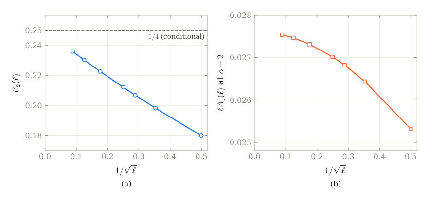
<figcaption class="paper-figure-caption"><b>Fig 1.</b> Figure 1. Growing equal intervals in infinite critical Ising at index two. (a) The charged coeffi- cient (5.7), with the conditional CFT amplitude shown as a dashed line. (b) The rescaled linear neutral coefficient (A.14), whose near constancy supports A1 ∝1/ℓ. Solid segments join adjacent sizes.</figcaption>
</figure>
<figure class="paper-figure-card">

<figcaption class="paper-figure-caption"><b>Fig 2.</b> Figure 1 compares this prediction with the exact Pfaffian coefficients at ℓ= 4, 8, 12, 16, 32, 64, 128 and also shows the linear neutral coefficient. The charged sequence reaches C2(128) = 0.2357979, about 6% below the conditional value 1/4. Fits to c0 + c1/ √</figcaption>
</figure>
<figure class="paper-figure-card">

<figcaption class="paper-figure-caption"><b>Fig 3.</b> Figure 2. Separated regions in infinite critical Ising. (a) The charged ratio for two length-two intervals follows ηα/4. (b) For one site intervals, the charged and single sheet neutral powers are α/4 and 1, the grey curve is their fixed support minimum, and above α = 4 the full ratio fits mix these lattice terms. In both panels, the α = 1 entries show the full R´enyi-2 mutual information, rather than a charged component or the singular functional c Mα at index one.</figcaption>
</figure>
<figure class="paper-figure-card">
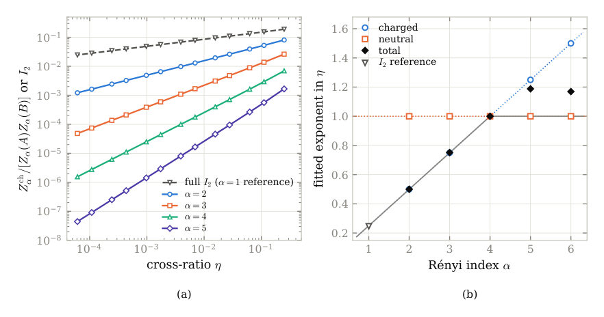
<figcaption class="paper-figure-caption"><b>Fig 4.</b> Figure 2 separates the Ising contributions. The charged power follows analytically from the order field correlator, so its numerical fit mainly checks the implementation. For one site regions, the neutral term has power one.</figcaption>
</figure>
<figure class="paper-figure-card">
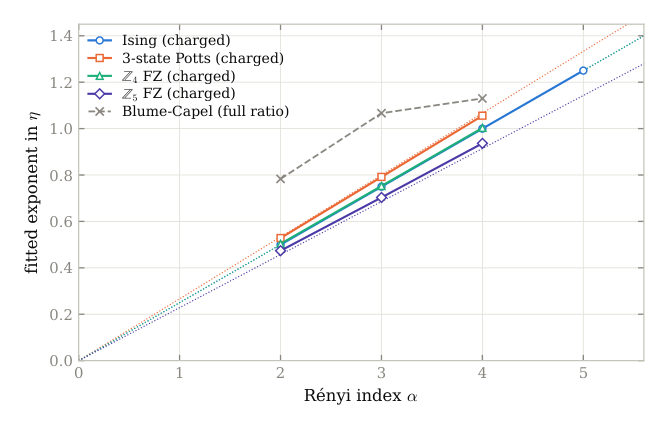
<figcaption class="paper-figure-caption"><b>Fig 5.</b> Figure 3. Fixed support exponents for the clock models and the Blume–Capel control. The dotted guides use the exact charged CFT dimensions in (3.3), and the grey control points are mean full ratio powers over separation windows. The Ising charged points are fits to the six smallest cross-ratios, η ≤1/576, while the interacting clock points use their full separation windows. Table 2 reports the full window charged slopes, including Ising, together with their window or size sensitivities.</figcaption>
</figure>
</div>

<p><strong>Summary.</strong> This paper analyzes Stabilizer Rényi moments in critical quantum chains described by CFTs, showing that these moments provide information beyond standard entanglement measures. The authors derive exact relations and demonstrate that local changes in the Hamiltonian can affect these moments without altering the entanglement spectrum. This work advances the theoretical understanding of quantum correlations in many-body systems.</p>
<p><strong>Why it may be interesting.</strong> The connection between operator-dependent quantities (Stabilizer moments) and entanglement measures in critical systems provides a powerful, non-standard diagnostic tool for characterizing quantum phases, relevant to understanding correlation functions in strongly correlated materials.</p>
<details>
<summary>Detailed structure</summary>
<p><strong>Main problem.</strong> The paper investigates the spatial decay of Stabilizer Rényi moments, which are sensitive to the choice of operator basis and do not always correlate directly with entanglement spectra.</p>
<p><strong>Main result.</strong> The authors derive an exact entanglement baseline for pure stabilizer states and find that an on-site rotation in the Ising model can alter the decay exponent while preserving the entanglement spectrum.</p>
<p><strong>Method.</strong> The analysis employs techniques from Conformal Field Theory (CFT) to study the decay of generalized mutual information ($   ext{Istab}_\alpha$) in critical quantum chains, involving cross-ratios and boundary CFT descriptions.</p>
<p><strong>Model / system.</strong> The study focuses on critical quantum chains modeled by two-dimensional CFTs, utilizing stabilizer states (like the Ising model) and analyzing correlation functions in separated regions.</p>
<p><strong>Key observables.</strong> Stabilizer Rényi moments ($Z_\alpha$), generalized mutual information ($  ext{Istab}_\alpha$), and the residual term $A_\alpha(A)$.</p>
<p><strong>Important parameters / regimes.</strong> The Rényi index $\alpha$, the cross-ratio $\eta$, and the correlation length/separation distance $\epsilon$.</p>
<p><strong>Assumptions / limitations.</strong> The analysis relies on mapping lattice correlations to continuum CFT descriptions, requiring careful control over the order of limits (endpoint matching).</p>
<p><strong>Figures summary.</strong> Not specified, but the notes reference equations detailing decay exponents, Pfaffian representations, and boundary CFT forms.</p>
<p><strong>Paper structure.</strong> The paper progresses by defining the moments and establishing the entanglement baseline, then analyzing the residual terms, deriving symmetry selection rules, and finally applying these concepts to specific models like the Ising chain to derive continuum predictions.</p>
</details>
<details>
<summary>Abstract</summary>
<p>Stabilizer Rényi moments depend on a choice of operator basis and need not be determined by entanglement spectra. In this paper, we study their spatial decay in critical quantum chains described by two-dimensional conformal field theories. We derive an exact entanglement baseline for reductions of pure stabilizer states and a symmetry selection rule for the charged contribution at fixed support. An exact Ising example shows that an on-site rotation changes the full decay exponent while preserving every subsystem entanglement spectrum. For growing Ising intervals at index two, we obtain an exact Pfaffian representation and compare the charged amplitude with a candidate conformal boundary calculation. The data support this prediction, but its identification with the lattice limit still requires endpoint matching and control of the order of limits.</p>
</details>
<p><sub><a href="#top">↑ back to top</a></sub></p>

<p><a id="paper-2610.28461"></a></p>
<h3 id="ubiquitous-flat-bands-in-edge-inflated-random-graphs"><a href="http://arxiv.org/abs/2610.28461v1">Ubiquitous Flat Bands in Edge-Inflated Random Graphs</a></h3>
<p><strong>Authors:</strong> Richard Berkovits<br>
<strong>Type:</strong> theory · <strong>Category:</strong> disordered systems and neural networks · <strong>PDF:</strong> <a href="https://arxiv.org/pdf/2610.28461v1">https://arxiv.org/pdf/2610.28461v1</a><br>
<strong>Analysis basis:</strong> full PDF text, analyzed in chunks
<strong>Topic relevance:</strong> <code>analog quantum simulation</code> <strong>2/5</strong></p>
<div class="figure-strip-hint">↔ Scroll figures horizontally</div>
<div class="paper-figures-scroll">
<figure class="paper-figure-card">
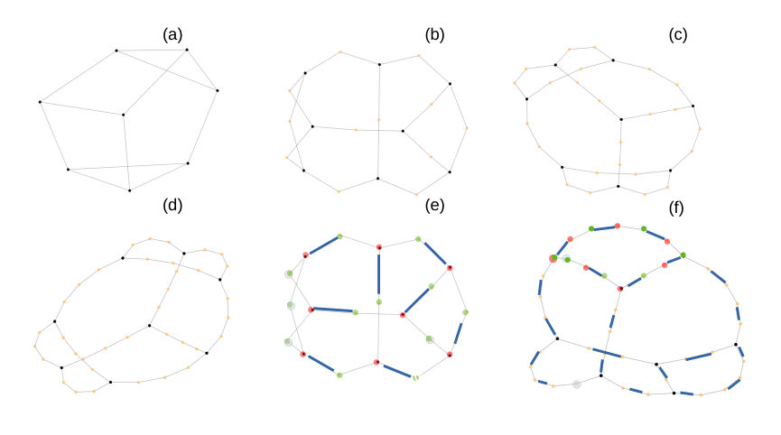
<figcaption class="paper-figure-caption"><b>Fig 1.</b> FIG. 1. An edge-inflated random regular graph (RRG). (a) The seed RRG, with No = 8 nodes and degree k = 3. (b) An inflated RRG, in which each edge between the original RRG sites (black circles) is replaced by two edges connected through a newly added site (orange circles). (c,d) The inflated RRG in which each original edge is inflated twice, L = 2, and three times, L = 3, respectively. The red and green circles illustrate a bipartition into sublattices A and B, while the thick blue lines denote a matching between pairs of vertices, yielding the maximum possible coverage of the graph. (e) A regularly inflated RRG with L = 1, which is bipartite, with |NB −NA| = 4, maximum matching ν(G) = 8,...</figcaption>
</figure>
<figure class="paper-figure-card">
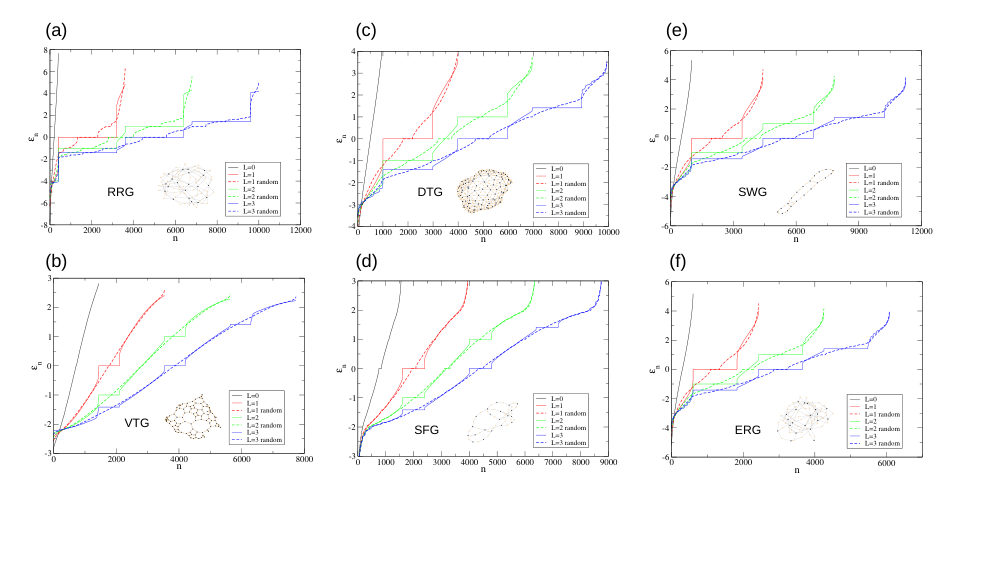
<figcaption class="paper-figure-caption"><b>Fig 2.</b> FIG. 2. The n-th energy level εn as a function of the level index n for different types of inflated random graphs. In all cases, an initial seed graph of size No is inflated by inserting additional nodes and edges. For uniform inflation, L additional edges and vertices are inserted along each original edge of the graph. For random inflation, the seed edges are inflated randomly so that the average number of additional edges between the original sites is ¯L. Shown are: (a) an inflated random regular graph (RRG) with seed size No = 400, and k = 16; (b) an inflated Voronoi tessellation graph (VTG) with No = 1440; (c) an inflated Delaunay triangulation graph (DTG), which is the dual graph of...</figcaption>
</figure>
<figure class="paper-figure-card">
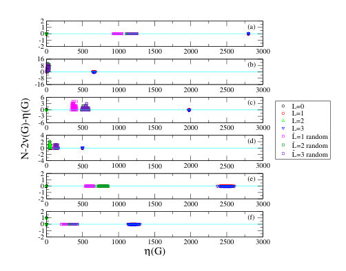
<figcaption class="paper-figure-caption"><b>Fig 3.</b> FIG. 3. Correspondence between the nullity of a graph, η(G), and its maximum matching, ν(G), for 100 independent re- alizations of each network class, using the same parameter values as in Fig. 2. For each realization, we evaluate the deviation from the conjectured relation η(G) = N −2ν(G), quantified by N −2ν(G) −η(G), for different values of the uniform inflation length L and, in the random case, the av- erage inflation length ¯L. The panels correspond to (a) RRG, (b) VTG, (c) DTG, (d) SFG, (e) SWG, and (f) ERG. For the RRG, the relation η(G) = N −2ν(G) holds exactly for all values of L and ¯L. The ERG shows a very similar pattern, except for L = 0, 2, where no zero eigenvalues are...</figcaption>
</figure>
<figure class="paper-figure-card">
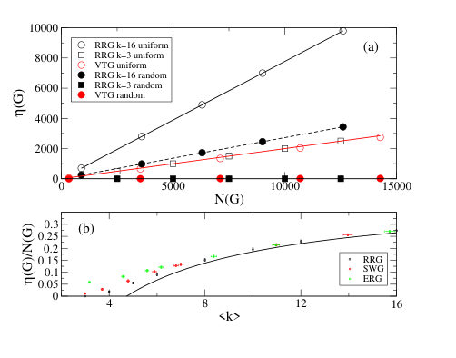
<figcaption class="paper-figure-caption"><b>Fig 4.</b> FIG. 4. (a) The number of zero-energy states η(G) as a func- tion of the total number of sites N(G) for RRGs with k = 16 and k = 3, and for the VTG, for which ⟨k⟩∼3. Results are shown for both uniform inflation with L = 1 and ran- dom inflation with ¯L = 1. The results are averaged over 100 independent realizations of the seed graph Go. Eq. (62) for uniform inflation is represented by the solid black (k = 16) and red (k = 3) lines. For random inflation, Eq. (64) is repre- sented by the dashed black line for k = 16, whereas for k ∼3 it predicts a vanishing extensive contribution, as discussed in the text. (b) The ratio η(G)/N(G) as a function of the av- erage degree ⟨k⟩of the seed graph for...</figcaption>
</figure>
<figure class="paper-figure-card">
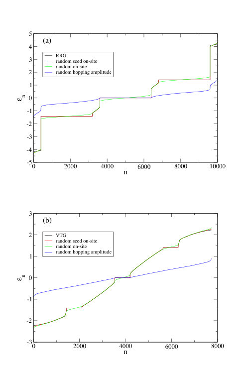
<figcaption class="paper-figure-caption"><b>Fig 5.</b> FIG. 5. The n-th energy level εn as a function of the level index n for three types of disorder in (a) RRG and (b) VTG graphs, using the same seed graphs as in Fig. 2. Black curves correspond to the case with L = 3 and no disorder. Red curves depict the case in which the on-site energies on the seed sites are chosen from a uniform distribution in the in- terval [−0.3, 0.3], together with random hopping phases cor- responding to random magnetic flux. Green curves show the case in which all on-site energies are chosen from the same in- terval, again with random hopping phases. Blue curves repre- sent the case of random hopping amplitudes chosen from the interval [−0.5, 0.5], also with random...</figcaption>
</figure>
</div>

<p><strong>Summary.</strong> This work demonstrates that flat bands, typically associated with periodic lattices, can emerge robustly in complex, nonperiodic random networks simply by inflating the edges with local chains. The mechanism is rooted in destructive interference constraints imposed by the local graph structure, providing a general method for engineering degenerate quantum states in disordered systems.</p>
<p><strong>Why it may be interesting.</strong> The finding that robust flat bands can emerge purely from local graph rewriting mechanisms, independent of global crystalline order, provides a powerful, generalizable paradigm for engineering quantum states in disordered materials.</p>
<details>
<summary>Detailed structure</summary>
<p><strong>Main problem.</strong> The paper investigates the mechanism and conditions under which flat bands—macroscopically degenerate eigenstates—can emerge in nonperiodic, random network structures.</p>
<p><strong>Main result.</strong> Flat bands can arise generically in random graphs through a simple edge-inflation procedure, demonstrating that such spectral features do not require periodic or crystalline order.</p>
<p><strong>Method.</strong> The authors analyze the tight-binding Hamiltonian on graphs constructed by replacing each edge of a seed random graph with a finite 1D chain (edge-inflation).</p>
<p><strong>Model / system.</strong> The model is a tight-binding system on random graphs (e.g., RRG, VTG, ERG) where edges are replaced by chains of length L or $\bar{L}$. The Hamiltonian is analyzed to find its eigenvalues.</p>
<p><strong>Key observables.</strong> Flat band energies, the degeneracy of zero-energy states ($\eta(G)$), and the ratio $\eta(G)/N(G)$.</p>
<p><strong>Important parameters / regimes.</strong> Average degree ($\langle k \rangle$) of the seed graph, inflation length ($L$ or $\bar{L}$), and the type of disorder applied (bond vs. site).</p>
<p><strong>Assumptions / limitations.</strong> The analysis relies on the edge-inflation procedure to induce spectral degeneracy, and for trees, the degeneracy is related to the graph nullity $\eta(G)$ and maximum matching number $\nu(G)$.</p>
<p><strong>Figures summary.</strong> Figures show the $n$-th energy level $\epsilon_n$ vs. $n$ for various inflated graph types under different disorder conditions, and plots comparing the number of zero-energy states ($\eta(G)$) against graph size or average degree.</p>
<p><strong>Paper structure.</strong> The paper establishes the model via the Hamiltonian, details the edge-inflation procedure across multiple random graph ensembles, derives theoretical relationships for zero-energy states (especially for trees), and finally analyzes the robustness of the flat bands against various types of disorder.</p>
</details>
<details>
<summary>Abstract</summary>
<p>Flat bands are usually associated with periodic lattice geometries, where destructive interference or chiral-symmetry constraints produce macroscopically degenerate eigenstates. Here we show that flat bands arise generically in a broad class of nonperiodic random networks through a simple edge-inflation procedure. Starting from random regular, Voronoi tessellation, Delaunay triangulation, scale-free, small-world, and Erdös-Rényi seed graphs, each edge is replaced by a finite one-dimensional tight-binding chain, either with fixed length $L$ or with random lengths of mean $\bar L$. Although the original random graphs typically have adjacency matrices of full rank and therefore few or no zero eigenstates, their inflated counterparts exhibit extensive flat bands. The flat-band energies are determined by the eigenstates residing on the chains or, more generally, by the eigenvalues of identical loopless motifs replacing the seed bonds. The corresponding eigenstates are states supported on subsets of the inflated chains formed by destructive interference at the original seed vertices. For zero-energy flat bands, we relate the degeneracy to the graph nullity $η(G)$ and the maximum matching number $ν(G)$. The numerical results support the correspondence $η(G)=N-2ν(G)$, up to small deviations, across the random graph ensembles studied. The fraction of degenerate zero-energy states in inflated random graphs is controlled primarily by the average degree of the seed graph. We further show that the flat bands exhibit characteristic robustness to disorder: disorder on the seed sites and random magnetic flux leave the flat bands essentially unchanged, while bond disorder and disorder on the chain or motif sites broaden them. These results show that flat bands do not require crystalline order, but can emerge as robust consequences of local graph inflation and motif substitution.</p>
</details>
<p><sub><a href="#top">↑ back to top</a></sub></p>

<p><a id="paper-2610.28600"></a></p>
<h3 id="complete-modified-logarithmic-sobolev-inequalities-for-one-dimensional-quantum-spin-chain"><a href="http://arxiv.org/abs/2610.28600v1">Complete Modified Logarithmic Sobolev Inequalities for one-dimensional quantum Spin Chain</a></h3>
<p><strong>Authors:</strong> Li Gao, Jingyu Guo, Sihao Wang<br>
<strong>Type:</strong> theory · <strong>Category:</strong> statistical mechanics · <strong>PDF:</strong> <a href="https://arxiv.org/pdf/2610.28600v1">https://arxiv.org/pdf/2610.28600v1</a><br>
<strong>Analysis basis:</strong> full PDF text, analyzed in chunks
<strong>Topic relevance:</strong> <code>analog quantum simulation</code> <strong>1/5</strong> · <code>correlated / nonlocal dissipation</code> <strong>1/5</strong> · <code>driven-dissipative phase transition</code> <strong>1/5</strong> · <code>methods for driven-dissipative</code> <strong>1/5</strong> · <code>non-equilibrium universality</code> <strong>1/5</strong> · <code>scars &amp; prethermalization</code> <strong>1/5</strong></p>
<div class="figure-strip-hint">↔ Scroll figures horizontally</div>
<div class="paper-figures-scroll">
<figure class="paper-figure-card">
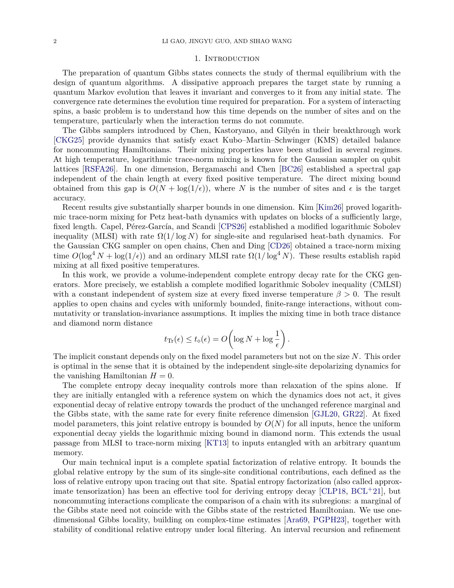
<figcaption class="paper-figure-caption"><b>Fig 1.</b> Low-resolution page preview, page 2</figcaption>
</figure>
<figure class="paper-figure-card">
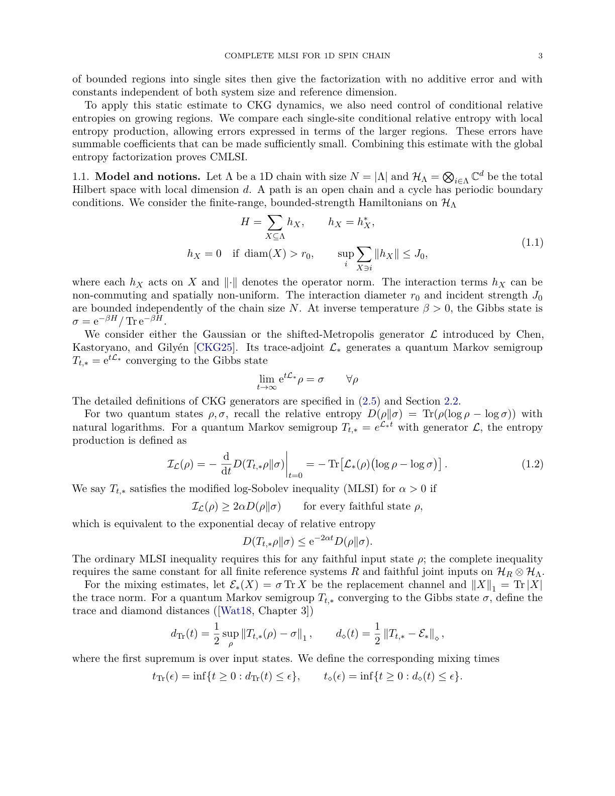
<figcaption class="paper-figure-caption"><b>Fig 2.</b> Low-resolution page preview, page 3</figcaption>
</figure>
<figure class="paper-figure-card">
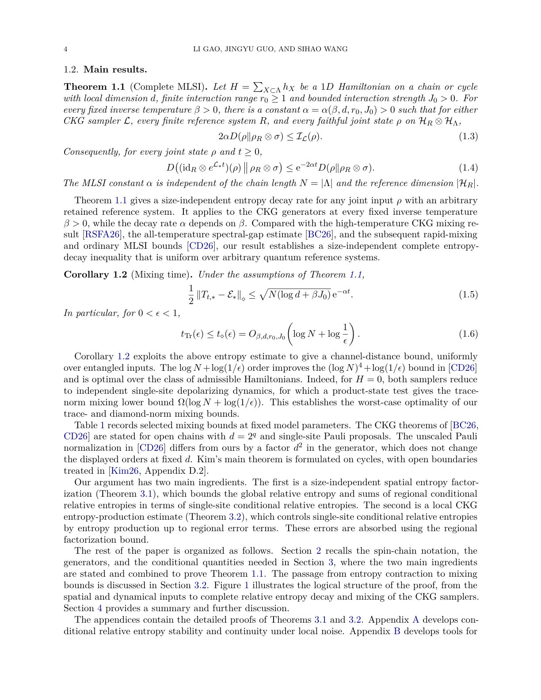
<figcaption class="paper-figure-caption"><b>Fig 3.</b> Low-resolution page preview, page 4</figcaption>
</figure>
<figure class="paper-figure-card">
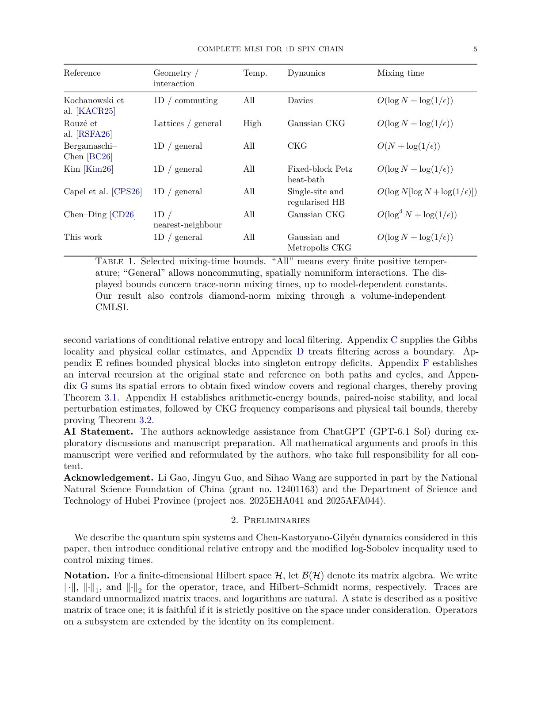
<figcaption class="paper-figure-caption"><b>Fig 4.</b> Low-resolution page preview, page 5</figcaption>
</figure>
<figure class="paper-figure-card">
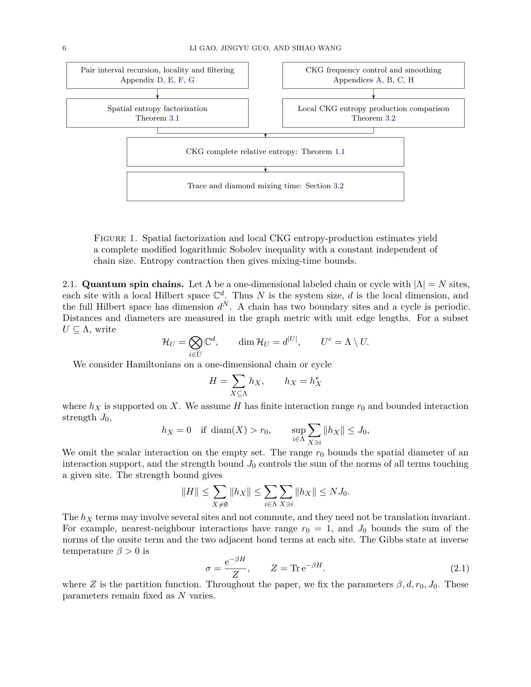
<figcaption class="paper-figure-caption"><b>Fig 5.</b> Low-resolution page preview, page 6</figcaption>
</figure>
</div>

<p><strong>Summary.</strong> This paper proves a complete modified logarithmic Sobolev inequality for quantum spin chains undergoing Markovian evolution towards equilibrium. By establishing this inequality, the authors derive an optimal, system-size-independent bound for the mixing time in both trace and diamond norms. This provides a powerful theoretical tool for quantifying how quickly quantum systems thermalize.</p>
<p><strong>Why it may be interesting.</strong> The rigorous derivation of mixing times using functional inequalities like MLSI is fundamental for understanding thermalization and equilibration in complex quantum many-body systems, directly impacting how we model physical processes like quantum thermalization.</p>
<details>
<summary>Detailed structure</summary>
<p><strong>Main problem.</strong> The paper aims to determine the convergence rate (mixing time) for preparing quantum Gibbs states using quantum Markov evolution, particularly for systems with complex, non-commuting interactions.</p>
<p><strong>Main result.</strong> They establish a complete modified logarithmic Sobolev inequality (CMLSI) with a constant independent of system size, leading to an optimal mixing time bound of $O(\log N + \log(1/\epsilon))$ for both trace and diamond norms.</p>
<p><strong>Method.</strong> The proof relies on establishing a complete spatial factorization of the relative entropy and bounding the entropy production rate using local estimates derived from the quantum Markov generator.</p>
<p><strong>Model / system.</strong> The system is a one-dimensional quantum spin chain described by a Hamiltonian with finite-range, bounded interactions. The dynamics are governed by the Chen–Kastoryano–Gilyén (CKG) generator, driving the system towards the Gibbs state $\sigma = e^{-eta H} / 	ext{Tr}(e^{-eta H})$.</p>
<p><strong>Key observables.</strong> Relative Entropy $D(
ho\|\sigma)$, Entropy Production $I_L(
ho)$, Trace distance $d_{	ext{Tr}}(t)$, and Diamond distance $d_{\diamond}(t)$.</p>
<p><strong>Important parameters / regimes.</strong> Inverse temperature $eta$, interaction range $r_0$, and interaction strength $J_0$. The results are shown to be independent of system size $N$.</p>
<p><strong>Assumptions / limitations.</strong> The result holds for open chains and cycles with uniformly bounded, finite-range interactions, without assuming commutativity or translation-invariance.</p>
<p><strong>Figures summary.</strong> The notes mention Figure 1 illustrates the proof structure: spatial/dynamical inputs lead to complete relative entropy decay, which in turn yields the mixing bounds.</p>
<p><strong>Paper structure.</strong> The paper builds from general MLSI results to a <em>complete</em> inequality involving an arbitrary reference system $R$, which is the key step yielding the optimal, size-independent mixing time bound.</p>
</details>
<details>
<summary>Abstract</summary>
<p>We prove a complete modified logarithmic Sobolev inequality with a system-size-independent constant for Chen--Kastoryano--Gilyén Gibbs samplers on one-dimensional spin chain at every fixed positive temperature. The result holds for Hamiltonians with bounded finite-range interactions, including noncommuting and spatially nonuniform interactions. It yields trace and diamond mixing times of order $O(\log N+\log(1/ε))$. The proof establishes complete spatial entropy factorization and absorbs quasi-local errors as conditional relative entropy at the original joint state and reference. The static estimate also yields a system-size-independent CMLSI for the single-site Petz heat-bath and regularised heat-bath dynamics.</p>
</details>
<p><sub><a href="#top">↑ back to top</a></sub></p>

<p><a id="paper-2610.27630"></a></p>
<h3 id="persistent-photo-enhancement-of-molecular-orbital-excitations-in-the-kondo-insulator-fesbmath726math"><a href="http://arxiv.org/abs/2610.27630v1">Persistent Photo-Enhancement of Molecular Orbital Excitations in the Kondo Insulator FeSb$_2$</a></h3>
<p><strong>Authors:</strong> Ke-Jun Xu, Nathan Giles-Donovan, Paulina Majchrzak, Abhi Suthar, Matthias Hepting, Marco Trento, Giacomo Ghiringhelli, Elizabeth Skoropata, Hiroki Ueda, Eugenio Paris, Biaolong Liu, Elia Razzoli, Wei-Sheng Lee, Thomas P. Devereaux, Zhi-Xun Shen, Dung-Hai Lee, Robert J. Birgeneau<br>
<strong>Type:</strong> experiment · <strong>Category:</strong> strongly correlated electrons · <strong>PDF:</strong> <a href="https://arxiv.org/pdf/2610.27630v1">https://arxiv.org/pdf/2610.27630v1</a><br>
<strong>Analysis basis:</strong> full PDF text, analyzed in chunks
<strong>Topic relevance:</strong> <code>Keldysh / 2PI / non-Gaussian methods</code> <strong>1/5</strong> · <code>correlated / nonlocal dissipation</code> <strong>1/5</strong> · <code>non-equilibrium universality</code> <strong>1/5</strong> · <code>quantum measurements</code> <strong>1/5</strong> · <code>scars &amp; prethermalization</code> <strong>1/5</strong></p>
<div class="figure-strip-hint">↔ Scroll figures horizontally</div>
<div class="paper-figures-scroll">
<figure class="paper-figure-card">
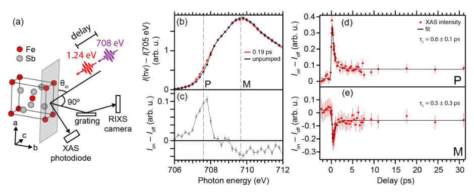
<figcaption class="paper-figure-caption"><b>Fig 1.</b> FIG. 1. Transient X-ray absorption spectroscopy in response to optical excitation. (a) Schematic of the trXAS and trRIXS experimental geometry. The FeSb2 single crystal was cleaved along the a-c surface and placed with the b and c axes within the scattering plane. The incidence angle θin is the angle of the sample surface relative to the incident X-ray beam. The spectrometer was fixed at 90◦with respect to the incident beam. (b) XAS spectra for the static condition (black curve) and 0.19 ps after the arrival of the pump pulse (red curve). A constant value (intensity at 705 eV) has been subtracted from each spectrum. (c) Difference between the pumped and static XAS. Dashed vertical lines in...</figcaption>
</figure>
<figure class="paper-figure-card">
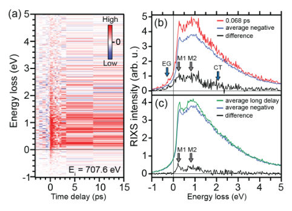
<figcaption class="paper-figure-caption"><b>Fig 2.</b> FIG. 2. Pump-induced intensity changes in RIXS spectra at the XAS pre-edge. (a) Color plot of the difference RIXS en- ergy distribution curves at different delays between the 1 µm pump pulse and the X-ray probe pulse. The difference RIXS spectra are obtained by subtracting spectrum at each time delay from the average of the negative delay spectra between -3.27 ps and -0.43 ps. (b) Comparison of the pumped RIXS spectrum at a delay of 0.068 ps (red curve) with the average of the negative spectra (blue curve). The difference spectrum is shown as the black curve. EG refers to the energy gain fea- ture and CT refers to the charge transfer excitations. M1 and M2 refer to the low energy molecular...</figcaption>
</figure>
<figure class="paper-figure-card">
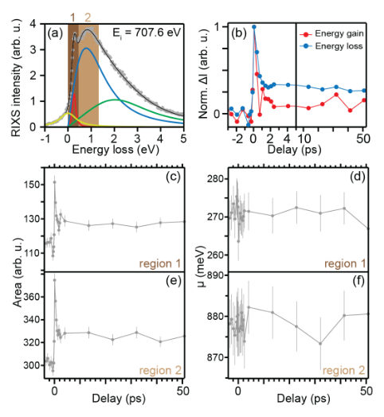
<figcaption class="paper-figure-caption"><b>Fig 3.</b> FIG. 3. Delay dependence of RIXS spectra. (a) Fitting of the unpumped RIXS spectrum (average over the negative de- lays) to distinguish between different spectral regions. The fit is performed with a Voigt peak for the small quasielas- tic feature (yellow curve) and anti-Lorentzian peaks for the M1 (red curve), M2 (blue curve), and charge transfer (green curve) features. The overall fit was convolved with the instru- ment resolution of 175 meV. Brown regions represent regions where the M1 feature is prominent (region 1) and where the M2 feature is prominent (region 2). (b) Delay dependence of the RIXS difference intensity within the energy gain window [-3, 0] eV (red curve) and energy loss...</figcaption>
</figure>
</div>

<p><strong>Summary.</strong> This work reports on the anomalous dynamics of molecular orbital excitations in the Kondo insulator FeSb2 using time-resolved X-ray spectroscopy. Researchers observed a transient, persistent enhancement of these excitations following optical pumping. These findings strongly argue for the necessity of a many-body excitation picture to accurately describe the photo-induced electronic state of the material.</p>
<p><strong>Why it may be interesting.</strong> The observation of persistent, enhanced molecular orbital excitations in a correlated insulator provides direct experimental evidence for non-equilibrium many-body dynamics, which is crucial for understanding charge transfer and excitation lifetimes in strongly correlated materials.</p>
<details>
<summary>Detailed structure</summary>
<p><strong>Main problem.</strong> The study investigates the anomalous dynamics of many-body molecular orbital excitations in the Kondo insulator FeSb2 following optical excitation.</p>
<p><strong>Main result.</strong> The research observed a transient, persistent enhancement of molecular orbital excitation intensities for at least 50 ps, which requires a many-body excitation picture beyond simple single-particle changes.</p>
<p><strong>Method.</strong> The experiment utilized time-resolved X-ray Absorption Spectroscopy (trXAS) and time-resolved Resonant Inelastic X-ray Scattering (trRIXS) at the SwissFEL facility.</p>
<p><strong>Model / system.</strong> The physical system is the Kondo insulator FeSb2, characterized by a gap formed by hybridization between localized magnetic moments and delocalized conduction electrons. The analysis focuses on the interplay between these localized and delocalized electronic states.</p>
<p><strong>Key observables.</strong> Transient intensity transfer from delocalized states (main peak) to localized molecular orbital states (pre-edge); $\sim 30\%$ intensity increase at M1/M2 molecular orbital energies in trRIXS.</p>
<p><strong>Important parameters / regimes.</strong> Pump fluence of $11 	ext{ mJ/cm}^2$; persistence time scale of at least $50 	ext{ ps}$; excitation energy from $1 \mu	ext{m}$ photons.</p>
<p><strong>Assumptions / limitations.</strong> The persistence of the signal suggests a metastable state requiring a many-body excitation picture, moving beyond single-particle population changes.</p>
<p><strong>Figures summary.</strong> Figures show the time-delay dependence of XAS intensity (Fig. 1) and RIXS spectra (Fig. 2, 3), illustrating the initial enhancement of molecular orbital intensities followed by partial persistence over tens of picoseconds.</p>
<p><strong>Paper structure.</strong> The paper progresses by first presenting the initial observation of intensity transfer via trXAS, followed by detailed analysis using trRIXS to quantify the enhancement and its subsequent decay/persistence over time delays.</p>
</details>
<details>
<summary>Abstract</summary>
<p>When insulators are excited by photons with above-gap energies, photo-doped carriers are transiently generated. Typically, orbital excitations weaken and broaden due to increased screening by these transient carriers, followed by a few-ps recovery via phonon thermalization. Here we report the observation of anomalous dynamics of many-body molecular orbital excitations in the narrow-gap Kondo insulator FeSb$_2$. In the pumped X-ray absorption spectra following excitation with 1~$μ$m photons, we observe a transient transfer of absorption intensity from the delocalized states at the main absorption peak to the localized molecular orbital states at the pre-edge. At the resonance of the low-energy molecular orbital excitations, the pumped resonant inelastic X-ray spectra show an approximately 30\% intensity increase at a pump fluence of 11 mJ/cm$^2$ concomitant with the emergence of an energy gain feature. While the energy gain feature disappears after about 1-2~ps, the increased molecular orbital excitation intensities partially persist for at least 50~ps with no discernible energy shift. These observations require the invocation of a many-body excitation picture beyond single particle population changes.</p>
</details>
<p><sub><a href="#top">↑ back to top</a></sub></p>

<p><a id="paper-2610.28542"></a></p>
<h3 id="acceleration-of-ctqmc-via-denoising-diffusion-models-with-auxiliary-spectral-functions"><a href="http://arxiv.org/abs/2610.28542v1">Acceleration of CTQMC via Denoising Diffusion Models with Auxiliary Spectral Functions</a></h3>
<p><strong>Authors:</strong> Rishi Rao, Li Zhu<br>
<strong>Type:</strong> theory · <strong>Category:</strong> strongly correlated electrons · <strong>PDF:</strong> <a href="https://arxiv.org/pdf/2610.28542v1">https://arxiv.org/pdf/2610.28542v1</a><br>
<strong>Analysis basis:</strong> full PDF text, analyzed in chunks
<strong>Topic relevance:</strong> <code>Keldysh / 2PI / non-Gaussian methods</code> <strong>1/5</strong> · <code>analog quantum simulation</code> <strong>1/5</strong> · <code>methods for driven-dissipative</code> <strong>1/5</strong> · <code>quantum measurements</code> <strong>1/5</strong></p>
<div class="figure-strip-hint">↔ Scroll figures horizontally</div>
<div class="paper-figures-scroll">
<figure class="paper-figure-card">
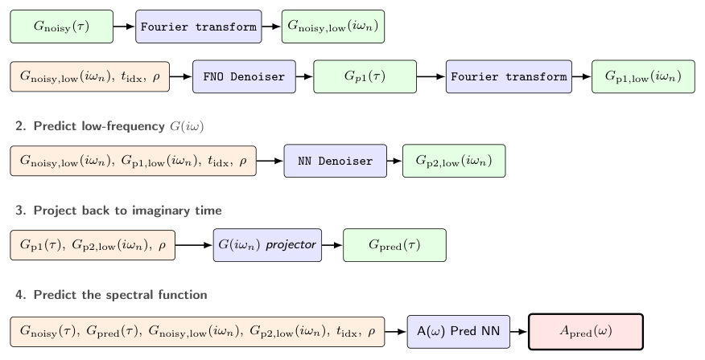
<figcaption class="paper-figure-caption"><b>Fig 1.</b> FIG. 1. Computation flow used to obtain the predicted spectral function Apred(ω). Input to neural network is noisy imaginary time Green’s function Gnoisy(τ), predicted density of impurity orbital ρ and estimated diffusion timestep tidx. The fourier transform step only retains the first Klow Matsubara frequencies. The projector step is a constrained least squares correction ensuring data consistency.</figcaption>
</figure>
<figure class="paper-figure-card">
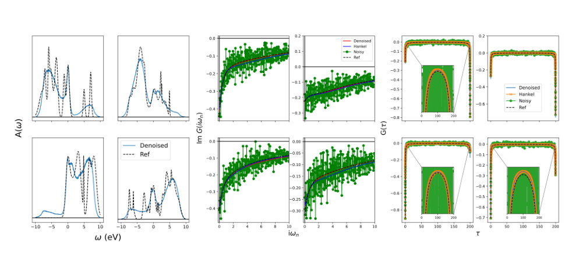
<figcaption class="paper-figure-caption"><b>Fig 2.</b> FIG. 2. Results of denoising by model without optimization towards self-energy target for 4 randomly chosen examples within a held-out test set.</figcaption>
</figure>
<figure class="paper-figure-card">
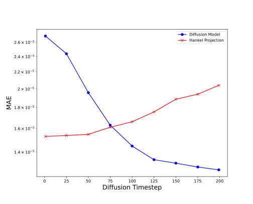
<figcaption class="paper-figure-caption"><b>Fig 3.</b> FIG. 3. Mean absolute error of denoised G(τ) versus diffusion timestep for both our denoising model and a Hankel projec- tion. Diffusion timestep here serves as a proxy for noise, with larger diffusion timestep indicating noisier input.</figcaption>
</figure>
<figure class="paper-figure-card">
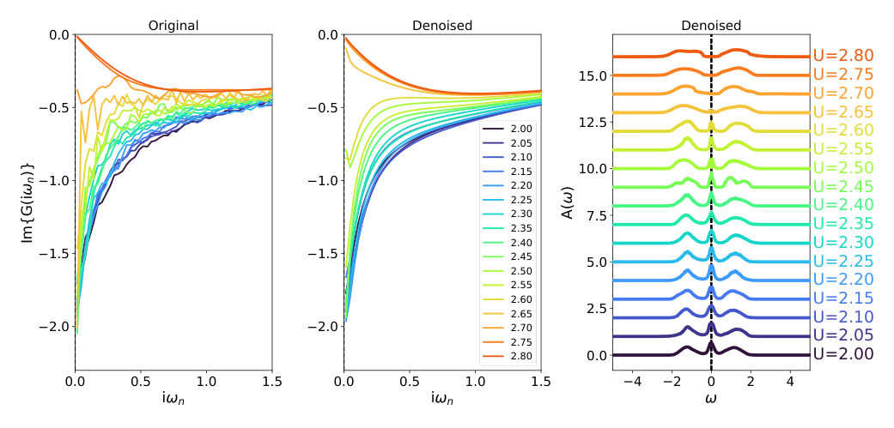
<figcaption class="paper-figure-caption"><b>Fig 4.</b> FIG. 4. (a) Denoised Green’s function versus (b) raw CTQMC Green’s function for the last DMFT iteration as a function of Hubbard interaction U for the single band Hubbard model. Also shown in (c) the evolution of the internal spectral function representation for the denoising model. The transition from paramagnetic metal to insulator happens around a U value of 2.65-2.7. Only 5000 CTQMC measurement steps were performed.</figcaption>
</figure>
<figure class="paper-figure-card">
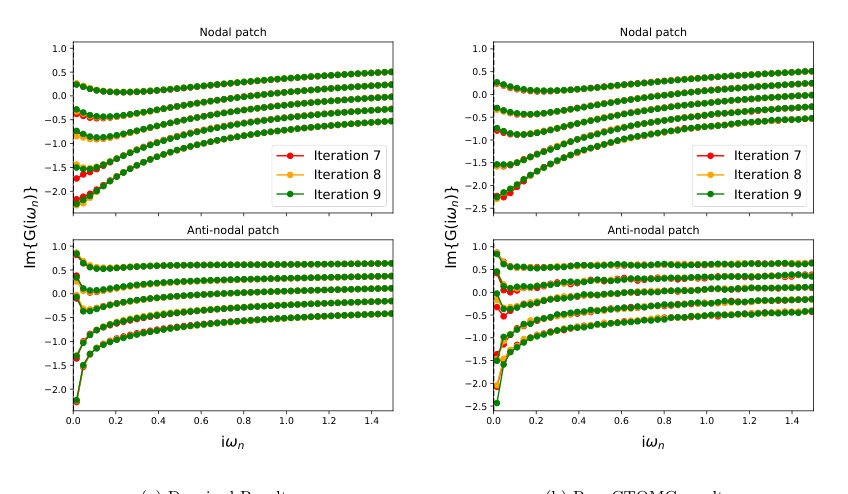
<figcaption class="paper-figure-caption"><b>Fig 5.</b> FIG. 5. Imaginary part of G(iωn) for raw CTQMC and denoised CTQMC per DMFT iteration for various doping levels. Each doping level is offset by 0.25 for clarity.</figcaption>
</figure>
</div>

<p><strong>Summary.</strong> This paper presents a novel machine learning approach using denoising diffusion models to mitigate severe statistical noise in CTQMC calculations for DMFT. By predicting auxiliary spectral functions, the method drastically reduces the computational cost—by factors of 10-100—while accurately capturing complex physics like Mott and pseudogap transitions in correlated materials.</p>
<p><strong>Why it may be interesting.</strong> While focused on condensed matter, the use of advanced generative AI (Diffusion Models) to solve fundamental, computationally intractable many-body physics problems provides a powerful methodological advance applicable across theoretical physics.</p>
<details>
<summary>Detailed structure</summary>
<p><strong>Main problem.</strong> The primary challenge is overcoming severe statistical noise inherent in Continuous-time Quantum Monte Carlo (CTQMC) solvers when calculating impurity self-energies for Dynamical Mean Field Theory (DMFT) at low temperatures.</p>
<p><strong>Main result.</strong> The proposed denoising framework reduces the required CTQMC measurement steps by a factor of 10-100, successfully reproducing key physics like the Mott and pseudogap transitions with significantly fewer measurements.</p>
<p><strong>Method.</strong> The authors introduce a neural denoiser based on the diffusion model architecture to predict auxiliary spectral functions from noisy imaginary-time Green's functions, refining the prediction using autodifferentiation to enforce physical constraints.</p>
<p><strong>Model / system.</strong> The work applies to strongly correlated electron systems studied via DMFT, specifically benchmarking on the half-filled Hubbard model on a Bethe lattice, the two-patch DCA of the 2D Hubbard model, and the $  ext{SrVO}_3$ material.</p>
<p><strong>Key observables.</strong> Imaginary time Green's functions, self-energies, and spectral functions $A(\omega)$ are the key observables, with the focus on recovering the spectral function without explicit analytic continuation.</p>
<p><strong>Important parameters / regimes.</strong> Low temperatures, the Coulomb interaction $U$, and the doping level (for the DCA model).</p>
<p><strong>Assumptions / limitations.</strong> The method assumes that the denoised auxiliary spectral functions are sufficient to accurately represent the true spectral properties, and the process is designed to ensure causality in the resulting Green's functions.</p>
<p><strong>Figures summary.</strong> Figures illustrate the multi-stage neural network architecture for spectral function prediction, comparing the denoised results against raw, low-measurement, and high-measurement reference calculations for various physical transitions.</p>
<p><strong>Paper structure.</strong> The paper details the theoretical motivation (noise in CTQMC/DMFT), introduces the diffusion model architecture for denoising, describes the constrained optimization/refinement steps, and validates the method by benchmarking against multiple physical models and transitions.</p>
</details>
<details>
<summary>Abstract</summary>
<p>Continuous-time Quantum Monte Carlo (CTQMC) impurity solvers are a numerically exact, but expensive, option for solving the Dynamical Mean Field Theory (DMFT) equations, with statistical noise from undersampling presenting a major challenge to low temperature studies. This noise is especially egregious within the sampled self-energy, which can destabilize the self-consistency loop upon insertion into the Dyson equation. In this work, we introduce a neural denoiser for fermionic imaginary time Green's functions based on the diffusion model architecture trained on synthetic data. The network predicts positive and normalized auxiliary spectral functions consistent with the noisy imaginary axis CTQMC data, which is then refined via autodifferentiation to match the measured self-energy, its first two high-frequency moments, and impurity occupation similar to the Constrained Residual Minimization (CRM) method. This leads to Green's functions and self-energies that are causal by design. Through this denoising framework we are able to reduce the required CTQMC measurement steps by a factor of 10-100. We benchmark our method with a half-filled Hubbard model on a Bethe lattice, a two-patch Dynamical Cluster Approximation (DCA) of the two-dimensional Hubbard model, and the SrVO$_3$ system. We reproduce the Mott transition upon increasing Coulomb interaction for the half-filled Hubbard model with only 5000 CTQMC measurements, the pseudogap transition for the DCA two-dimensional Hubbard model with only 5$\times$10$^5$ measurements, and match the spectral function of SrVO$_3$ with 50 times fewer measurements than the reference. Since we generate auxiliary spectral functions, we recover the approximate spectral functions of the systems for free without performing analytic continuation.</p>
</details>
<p><sub><a href="#top">↑ back to top</a></sub></p>

<p><a id="paper-2610.27764"></a></p>
<h3 id="searching-for-axion-dark-matter-via-superconductor-spin-hybrid-magnetometers"><a href="http://arxiv.org/abs/2610.27764v1">Searching for Axion Dark Matter via Superconductor-Spin Hybrid Magnetometers</a></h3>
<p><strong>Authors:</strong> Runqi Kang, Jian Zhang, Liangliang Rong, Xing Rong<br>
<strong>Type:</strong> experiment · <strong>Category:</strong> other · <strong>PDF:</strong> <a href="https://arxiv.org/pdf/2610.27764v1">https://arxiv.org/pdf/2610.27764v1</a><br>
<strong>Analysis basis:</strong> full PDF text, analyzed in chunks
<strong>Topic relevance:</strong> <code>QC/QI experiment</code> <strong>1/5</strong> · <code>analog quantum simulation</code> <strong>1/5</strong> · <code>quantum measurements</code> <strong>1/5</strong> · <code>quantum optics experiment</code> <strong>1/5</strong></p>
<div class="figure-strip-hint">↔ Scroll figures horizontally</div>
<div class="paper-figures-scroll">
<figure class="paper-figure-card">
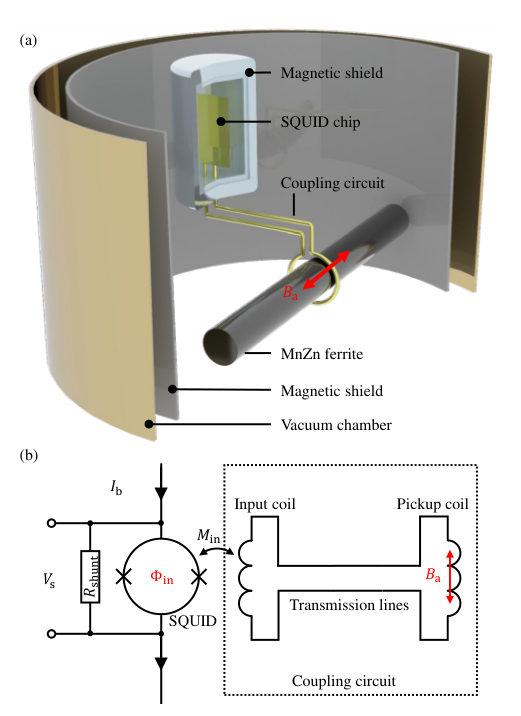
<figcaption class="paper-figure-caption"><b>Fig 1.</b> FIG. 1. Experimental setup and circuit model for the SQUID. (a) The superconductor-spin hybrid system. A SQUID and a spin-based magnetic-field amplifier made of MnZn ferrite were placed in a magnetic shield and a vacuum chamber. The SQUID and the amplifier were coupled via a superconducting coil. (b) Circuit model for the SQUID. The axion-induced magnetic flux was transferred to the SQUID loop through a coupling circuit. The SQUID loop was biased by a DC current and traduce the magnetic flux into a voltage signal.</figcaption>
</figure>
<figure class="paper-figure-card">
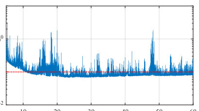
<figcaption class="paper-figure-caption"><b>Fig 2.</b> FIG. 2. Calibration results. (a) Relative permeability and gain. The measured relative permeability µr of the MnZn ferrite is shown as black circles. For every value for µr, the gain of the magnetic-field amplifier can be obtained through finite-element simulation, as the red triangles shows. The lines are interpolations of the data points. (b) Sensitivity of the superconductor-spin hybrid magnetometer to a real magnetic field. The noise floor is below 100 aT/Hz1/2 (the red dashed line). Peaks in the spectrum are attributed to noise leakage from the environment.</figcaption>
</figure>
<figure class="paper-figure-card">
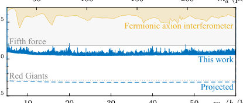
<figcaption class="paper-figure-caption"><b>Fig 3.</b> FIG. 4. (a) Constraints on the axion-electron coupling as a function of the frequency and the axion mass. Our experimental results are shown as the blue solid line. The yellow and gray regions are the parameter spaces excluded by previous haloscopes [19–22] and a fifth-force experiment [24], respectively. Astronomy limits on stellar axions are shown as the gray dotted line. With future optimization in the design and increase in the number of setups, our constraints can be improved by more than four orders of magnitude, as the blue dashed line shows. (b) Zoom-in of the frequency range 5∼60 kHz.</figcaption>
</figure>
<figure class="paper-figure-card">
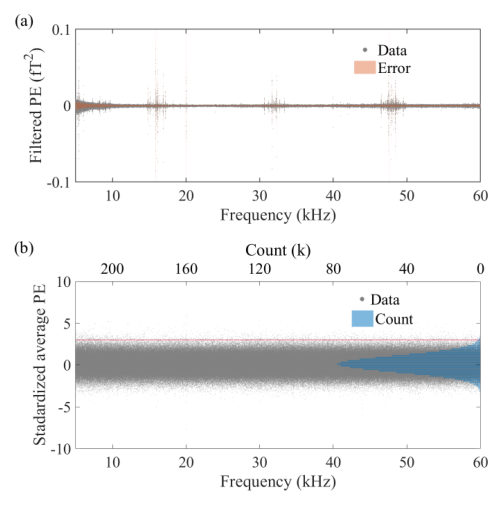
<figcaption class="paper-figure-caption"><b>Fig 4.</b> FIG. 3. Results of Run 1. (a) One filtered PE spectrum of Run 1. (b) Average standardized power excesses. The gray dots are data points and the blue bars are counting results. 1728 data points exceed the threshold for an axion hypothesis. They are rejected in succeeding runs.</figcaption>
</figure>
<figure class="paper-figure-card">
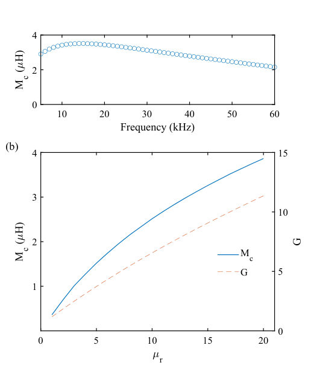
<figcaption class="paper-figure-caption"><b>Fig 5.</b> FIG. 5. (a) Measured Mc in the frequency range from 1 kHz to 60 kHz. (b) Dependence of Mc and G on the relative permeability.</figcaption>
</figure>
</div>

<p><strong>Summary.</strong> This work reports on an experimental search for Axion Dark Matter using a highly sensitive superconductor-spin hybrid magnetometer. By coupling a spin sensor (ferrite) to a SQUID readout, the authors achieved state-of-the-art magnetic field sensitivity in the tens of kHz range. The results set new, stringent upper limits on the axion-electron coupling constant, advancing the field of fundamental physics detection.</p>
<p><strong>Why it may be interesting.</strong> While the primary focus is particle astrophysics, the core technology relies on ultra-sensitive magnetic field sensing using superconducting circuits coupled to quantum materials (ferrites/spins), which touches upon advanced quantum sensing techniques relevant to AMO physics.</p>
<details>
<summary>Detailed structure</summary>
<p><strong>Main problem.</strong> The primary goal is the experimental search for Axion Dark Matter, a compelling candidate predicted by theories beyond the Standard Model.</p>
<p><strong>Main result.</strong> The experiment established the most stringent terrestrial constraints on the axion-electron coupling in the 5–60 kHz frequency range, rejecting all tested axion hypotheses.</p>
<p><strong>Method.</strong> The search utilizes a novel superconductor-spin hybrid magnetometer to detect the minute pseudomagnetic field generated by ambient axion dark matter.</p>
<p><strong>Model / system.</strong> The system comprises a high-permeability MnZn ferrite rod containing electron spins, coupled to a Superconducting Quantum Interference Device (SQUID) readout system, all housed in a dilution refrigerator.</p>
<p><strong>Key observables.</strong> Power Excess (PE) spectra, magnetic flux ($\Phi_{in}$), and the derived upper bounds on the axion-electron coupling constant ($g_{aee}$).</p>
<p><strong>Important parameters / regimes.</strong> Sensitivity achieved sub-100 aT/Hz$^{1/2}$ at tens of kHz; the search is constrained in the 5–60 kHz frequency range.</p>
<p><strong>Assumptions / limitations.</strong> The analysis assumes the axion signal couples to the MnZn ferrite spins, and that the signal must be consistent across multiple independent measurement runs.</p>
<p><strong>Figures summary.</strong> Figures illustrate the experimental setup, calibration of the magnetometer's gain and sensitivity, the processed power excess spectra from multiple runs, and the final constraint plot showing the derived upper bounds on $g_{aee}$ versus frequency.</p>
<p><strong>Paper structure.</strong> The paper details the theoretical motivation (axion coupling), the experimental platform (hybrid magnetometer), the detailed calibration procedures (measuring permeability and sensitivity), the data analysis pipeline (power spectrum extraction and averaging), and finally, the presentation of the derived constraints on the axion coupling.</p>
</details>
<details>
<summary>Abstract</summary>
<p>Axions are a compelling dark matter candidate suggested by theories beyond the Standard Model. The predicted axion-electron coupling and the resulting pseudomagnetic field allow for laboratory axion searches. Here we report an experimental axion search via a superconductor-spin hybrid magnetometer. A state-of-the-art broadband magnetometer with a sensitivity of sub-100 aT/Hz$^{1/2}$ at tens of kHz has been realized by coupling a ferrite spin sensor to a readout system based on a superconducting quantum interference device. The most stringent terrestrial constraints on the axion-electron coupling have been established in the frequency range 5$\sim$60 kHz. In the future, an improvement on the constraints of more than 4 orders of magnitude is foreseeable through arrays of superconductor-spin hybrid magnetometers with optimized designs. This work demonstrates the potential of superconductor-spin hybrid magnetometers in high-precision magnetic field sensing and the study of fundamental physics.</p>
</details>
<p><sub><a href="#top">↑ back to top</a></sub></p>

<p><a id="paper-2610.27165"></a></p>
<h3 id="the-next-phase-of-quantum-energy-science-from-mechanisms-to-applications"><a href="http://arxiv.org/abs/2610.27165v1">The next phase of quantum energy science: from mechanisms to applications</a></h3>
<p><strong>Authors:</strong> Florian Metzler, Matt K. Lilley, Matthew C. DeCapua, Peter L. Hagelstein, Jonah F. Messinger, Nicola Galvanetto<br>
<strong>Type:</strong> theory · <strong>Category:</strong> other · <strong>PDF:</strong> <a href="https://arxiv.org/pdf/2610.27165v1">https://arxiv.org/pdf/2610.27165v1</a><br>
<strong>Analysis basis:</strong> full PDF text, analyzed in chunks
<strong>Topic relevance:</strong> <code>analog quantum simulation</code> <strong>1/5</strong> · <code>correlated / nonlocal dissipation</code> <strong>1/5</strong> · <code>driven-dissipative phase transition</code> <strong>1/5</strong> · <code>quantum measurements</code> <strong>1/5</strong></p>
<div class="figure-strip-hint">↔ Scroll figures horizontally</div>
<div class="paper-figures-scroll">
<figure class="paper-figure-card">
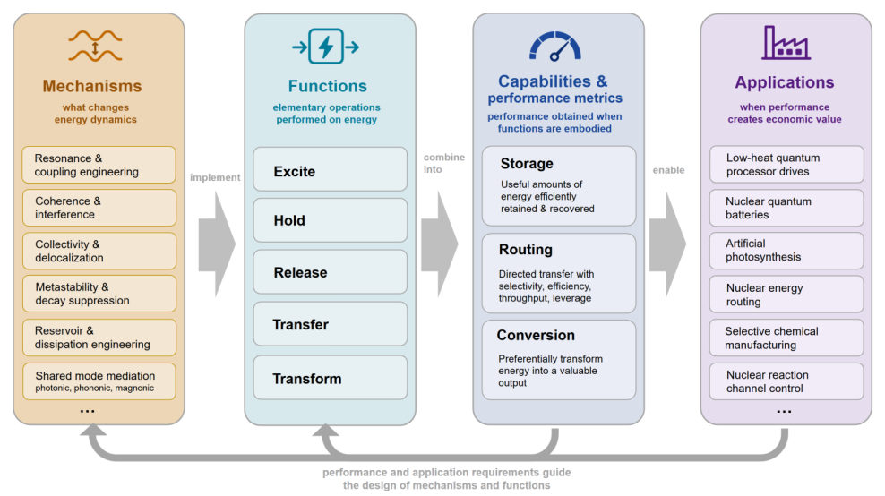
<figcaption class="paper-figure-caption"><b>Fig 1.</b> Figure 1. Maps out key relationships from mechanisms to applications in quantum energy science. Forward arrows link mechanisms, functions, capabilities/performance metrics and applications; lower arrows show how performance and application requirements guide design. The applications shown are the illustrative stretch scenarios in Table 3.</figcaption>
</figure>
<figure class="paper-figure-card">
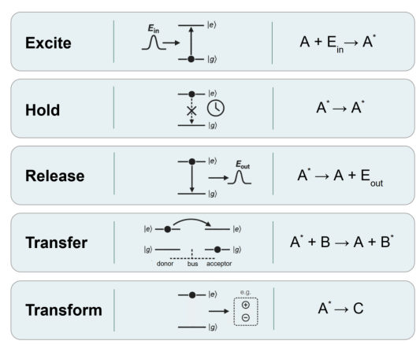
<figcaption class="paper-figure-caption"><b>Fig 2.</b> Figure 2. Five elementary energetic functions. The central sketches are illustrative: filled dots mark initial occupation, and |𝑔⟩and |𝑒⟩denote ground and excited states. On the right, 𝐴and 𝐵denote subsystems and an asterisk marks excitation. 𝐸in and 𝐸out indicate energy entering and leaving the system. 𝐶denotes a different energetic carrier or physical configuration, illustrated here by charge separation.</figcaption>
</figure>
<figure class="paper-figure-card">
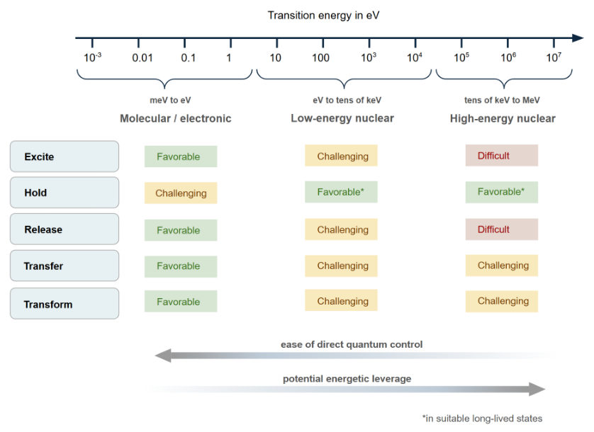
<figcaption class="paper-figure-caption"><b>Fig 3.</b> Figure 3. Implementation difficulty across transition-energy regimes. Energy ranges are schematic. Colors indicate qualitative difficulty for representative systems. The lower arrows indicate broad trends toward more demanding direct control and greater potential energetic leverage at higher transition energies.</figcaption>
</figure>
<figure class="paper-figure-card">
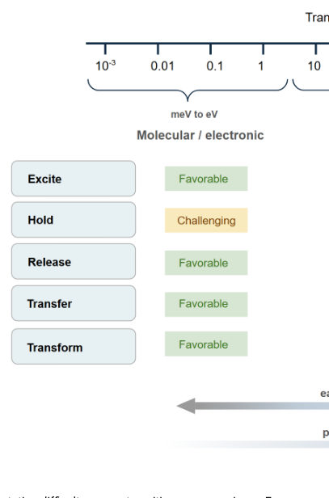
<figcaption class="paper-figure-caption"><b>Fig 4.</b> Figure 3 suggests a design strategy: exploit the functions that a platform provides naturally and engineer the missing ones.</figcaption>
</figure>
</div>

<p><strong>Summary.</strong> This paper establishes a unifying framework for 'quantum energy science,' which focuses on controlling energy flow rather than just preserving quantum states. It categorizes this field using five core functions—Excite, Hold, Release, Transfer, and Transform—that apply across vastly different physical systems, from molecules to the atomic nucleus. This framework is crucial for guiding future research toward practical energy technologies.</p>
<p><strong>Why it may be interesting.</strong> This work is highly relevant as it provides a unifying conceptual structure for diverse areas of open quantum systems, connecting concepts from quantum optics, energy harvesting, and nuclear physics under a single functional paradigm.</p>
<details>
<summary>Detailed structure</summary>
<p><strong>Main problem.</strong> The paper aims to develop a comprehensive framework for 'quantum energy science' to control energetic states and pathways, distinguishing this field from quantum information science.</p>
<p><strong>Main result.</strong> It organizes the field around five elementary functions (Excite, Hold, Release, Transfer, Transform) and three engineering capabilities (Storage, Routing, Conversion), providing a shared vocabulary for the community.</p>
<p><strong>Method.</strong> The authors develop a conceptual framework connecting mechanisms to functions, capabilities, and applications, drawing analogies across energy scales from molecular to nuclear.</p>
<p><strong>Model / system.</strong> The framework applies to diverse systems, including quantum batteries, molecular excitons, polaritons, and nuclear energy transitions (e.g., involving isotopes like ${}^{229}	ext{Th}$).</p>
<p><strong>Key observables.</strong> Energy recovered, power, storage time, decay rates, and coupling strengths are key performance metrics.</p>
<p><strong>Important parameters / regimes.</strong> Energy scales range from eV (molecular) to keV–MeV (nuclear); time scales span from fast dynamics to years (nuclear isomers).</p>
<p><strong>Assumptions / limitations.</strong> The core assumption is that controlling energy flow via quantum mechanisms (like engineered dissipation) can be systematically categorized and improved upon.</p>
<p><strong>Figures summary.</strong> Figure 1 maps the relationship from mechanisms to applications, while Figure 2 illustrates the five elementary energetic functions.</p>
<p><strong>Paper structure.</strong> The paper introduces the concept, defines the five elementary functions (Excite, Hold, Release, Transfer, Transform), details the mechanisms implementing them, and concludes by highlighting the engineering capabilities (Storage, Routing, Conversion) and future technological targets.</p>
</details>
<details>
<summary>Abstract</summary>
<p>A growing research community spanning quantum batteries, molecular and excitonic energy transport, polaritonics, quantum materials and nuclear control has begun to describe its work in terms of quantum energy or quantum energy science. What connects these otherwise disparate efforts is the deliberate use of quantum states, couplings, collective effects and engineered environments to control energetic states and pathways. A key difference from quantum information science is that the complete quantum state does not always need to be preserved; engineered dissipation or dephasing can even improve the desired outcome. We organize this emerging domain through a framework that connects mechanisms, functions, capabilities, and applications. We identify five elementary functions (Excite, Hold, Release, Transfer, and Transform) and examine the mechanisms that implement them. The same functions recur from the molecular to the nuclear scale, although their relative implementation difficulty can differ sharply. Moving toward technology, we highlight three engineering capabilities (Storage, Routing, and Conversion) through the performance metrics that matter for their applications. Stretch scenarios illustrate what performance targets could make these capabilities technologically consequential.</p>
</details>
<p><sub><a href="#top">↑ back to top</a></sub></p>

<p><a id="paper-2610.28031"></a></p>
<h3 id="microscopically-informed-self-consistent-multi-resolvent-closure-for-dense-many-body-spectra"><a href="http://arxiv.org/abs/2610.28031v1">Microscopically informed self-consistent multi-resolvent closure for dense many-body spectra</a></h3>
<p><strong>Authors:</strong> Zhiqiang Huang<br>
<strong>Type:</strong> theory · <strong>Category:</strong> statistical mechanics · <strong>PDF:</strong> <a href="https://arxiv.org/pdf/2610.28031v1">https://arxiv.org/pdf/2610.28031v1</a><br>
<strong>Analysis basis:</strong> full PDF text, analyzed in chunks
<strong>Topic relevance:</strong> <code>Keldysh / 2PI / non-Gaussian methods</code> <strong>1/5</strong> · <code>analog quantum simulation</code> <strong>1/5</strong> · <code>scars &amp; prethermalization</code> <strong>1/5</strong></p>
<div class="figure-strip-hint">↔ Scroll figures horizontally</div>
<div class="paper-figures-scroll">
<figure class="paper-figure-card">
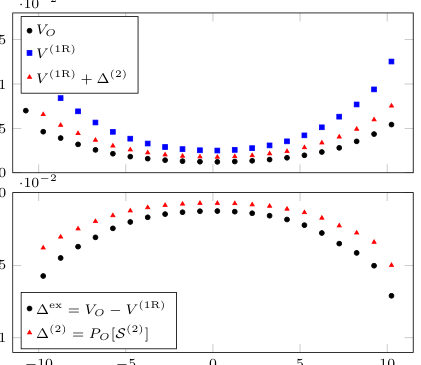
<figcaption class="paper-figure-caption"><b>Fig 1.</b> FIG. 2. Energy-resolved off-diagonal variance of O = X1 at λ = 2−2—the intermediate coupling at which the deforma- tion advantage of Sec. VI C is fully developed—band center ¯E ∈[−0.5, 0.5] (2 × 104 realizations, ∆ω = 0.5 bins). Top: exact VO, single-resolvent baseline V (1R) of Eq. (H4), and the two-resolvent reconstruction V (1R) + ∆(2) of Eq. (H5); the baseline misses both the magnitude and the ω shape, the re- construction restores the shape. Bottom: the exact missing correction ∆ex = VO −V (1R) and the class-organized two- resolvent projection ∆(2) = PO[S(2)] evaluated with the exact S(2), which carries 57–77% of it at every resolved ω (57–68% in the interior, exceeding 70% only in the...</figcaption>
</figure>
</div>

<p><strong>Summary.</strong> This work introduces the Multi-Resolvent Self-Consistency (MRSC) equations to tackle the intractable problem of high-order spectral correlations in many-body systems. By creating a finite, predictive closure based on exact identities, the authors provide a powerful tool to calculate spectral properties, notably improving the understanding of thermalization dynamics beyond single-resolvent approximations.</p>
<p><strong>Why it may be interesting.</strong> It provides a rigorous, computable framework to analyze spectral correlations and thermalization properties in interacting quantum systems, bridging the gap between exact spectral theory and practical, finite-parameter calculations.</p>
<details>
<summary>Detailed structure</summary>
<p><strong>Main problem.</strong> The paper addresses the challenge of developing a finite, predictive closure for the exact, high-order multi-resolvent hierarchy that describes dense many-body spectral correlations.</p>
<p><strong>Main result.</strong> The proposed Multi-Resolvent Self-Consistency (MRSC) framework successfully predicts spectral probes on the interacting Ising chain with high accuracy and provides a sign-correct correction to the ETH variance.</p>
<p><strong>Method.</strong> It introduces MRSC equations that separate an exact algebraic hierarchy from a finite-parameter closure, utilizing the Feshbach identity and moment-field identities to constrain the problem.</p>
<p><strong>Model / system.</strong> The theory is tested on free-fermion and interacting Ising chain models, focusing on general interacting Hamiltonians defined on a Hilbert space spanned by a product basis.</p>
<p><strong>Key observables.</strong> Energy-resolved spectral cumulants, off-diagonal eigenstate-thermalization-hypothesis (ETH) variance, and local rotational invariance diagnostics.</p>
<p><strong>Important parameters / regimes.</strong> The closure is parameterized by a finite set of self-consistent parameters ($   heta$) derived from moment matching.</p>
<p><strong>Assumptions / limitations.</strong> The framework assumes the validity of the causal $r$-fold Stieltjes representation and relies on truncating the infinite hierarchy to a finite, self-consistent set of parameters.</p>
<p><strong>Figures summary.</strong> Figures illustrate the MRSC architecture flow chart, detailing the path from the microscopic Hamiltonian to the self-consistent spectral parameters and error analysis.</p>
<p><strong>Paper structure.</strong> The paper builds by first establishing the exact algebraic hierarchy using the Feshbach identity, then developing the MRSC equations to enforce a finite-parameter closure via moment matching, and finally validating this closure against known benchmarks and diagnostic tests.</p>
</details>
<details>
<summary>Abstract</summary>
<p>The exact multi-resolvent hierarchy of dense many-body spectra encodes higher-order spectral-weight correlations, but closing it predictively for interacting Hamiltonians remains a challenge. We introduce the multi-resolvent self-consistency (MRSC) equations, which separate an exact algebraic hierarchy from an approximate finite-parameter closure. The exact Feshbach geometric identity organizes r-resolvent cumulants into a ladder over irreducible vertices Gamma^(r), and the projected hierarchy expresses those vertices as functionals of the cumulants. The closure works in finite parameters: a connectivity basis organizes a general Hamiltonian's seed into class amplitudes, and a causal r-fold Stieltjes representation with a moment-field identity reduce moment matching to a finite-dimensional problem closed at a predictive fixed point. On the free-fermion benchmark the tested exact identities are reproduced and the Faddeeva closure is recovered at r=1. In a blind test on the interacting Ising chain, with the exact two-resolvent data withheld, the Hamiltonian-derived closure predicts the tested probes to 0.35%-0.97%. At the observable level the exact two-resolvent sector supplies a sign-correct, energy-resolved correction to the single-resolvent baseline for the off-diagonal eigenstate-thermalization-hypothesis (ETH) variance, of order one relative to it. Closure errors organize hierarchically: a level-by-level deficit decomposition, anchor measurements of the isolatable terms, and an explicit propagation bound. The same moments further yield a diagnostic chain for the window conditions of local rotational invariance -- an exact drift-kernel identity, a proven single-state identifiability boundary, and a transferability census over couplings and realizations -- a finite-order framework, not a proof of universal emergence.</p>
</details>
<p><sub><a href="#top">↑ back to top</a></sub></p>

<p><a id="paper-2610.27321"></a></p>
<h3 id="physics-inspired-optimizers-beyond-the-edge-of-stability-period-two-orbits-and-delayed-instability"><a href="http://arxiv.org/abs/2610.27321v1">Physics-Inspired Optimizers beyond the Edge of Stability: Period-Two Orbits and Delayed Instability</a></h3>
<p><strong>Authors:</strong> Alexander Itin<br>
<strong>Type:</strong> both · <strong>Category:</strong> disordered systems and neural networks · <strong>PDF:</strong> <a href="https://arxiv.org/pdf/2610.27321v1">https://arxiv.org/pdf/2610.27321v1</a><br>
<strong>Analysis basis:</strong> full PDF text, analyzed in chunks
<strong>Topic relevance:</strong> <code>Frenkel-Kontorova</code> <strong>1/5</strong> · <code>driven-dissipative phase transition</code> <strong>1/5</strong> · <code>non-equilibrium universality</code> <strong>1/5</strong></p>
<div class="figure-strip-hint">↔ Scroll figures horizontally</div>
<div class="paper-figures-scroll">
<figure class="paper-figure-card">
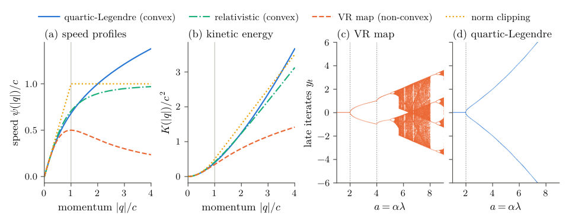
<figcaption class="paper-figure-caption"><b>Fig 1.</b> Figure 1: (a) Radial speed profiles and (b) the kinetic energies they imply. (c,d) Late iterates of the reduced model without momentum, y′ = y −aϕ(y). The VR map has a stable two-cycle only for 2 &lt; a &lt; 4, followed by a symmetry-breaking pitchfork, period doubling and chaos (first positive Lyapunov exponent at a ≈5.32); the quartic map has a stable two-cycle for every a &gt; 2.</figcaption>
</figure>
<figure class="paper-figure-card">
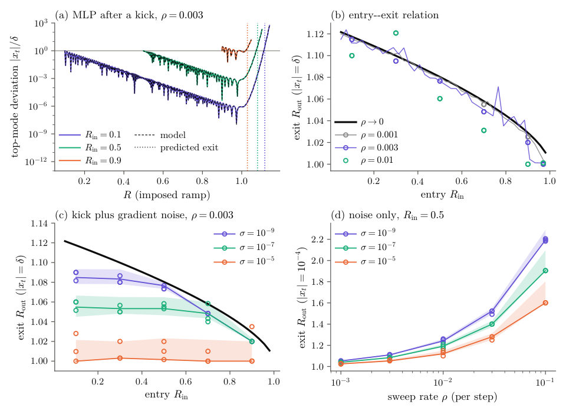
<figcaption class="paper-figure-caption"><b>Fig 2.</b> Figure 2: Controlled sweeps through the edge in a network (tanh MLP, Fashion-MNIST, full-batch EMA momentum, β1 = 0.9, no map; three seeds). (a) Deviation along the top Hessian direction after a kick δ = 10−6 at Rin, while R is ramped at ρ = 0.003 per step (solid: network, seed 0; dashed: linear recurrence (10) on the measured path; dotted: exit predicted by the slow-sweep relation (8)). (b) Exit point (deviation back at δ) versus entry point: network (markers, ρ ≤0.01), model on an exact linear ramp (thin lines, ρ ≤0.003) and the ρ →0 relation (8) (thick line). (c) Kick plus gradient noise σ, ρ = 0.003: network (markers) and model median and 10–90% range (lines, bands); the thick line is...</figcaption>
</figure>
<figure class="paper-figure-card">
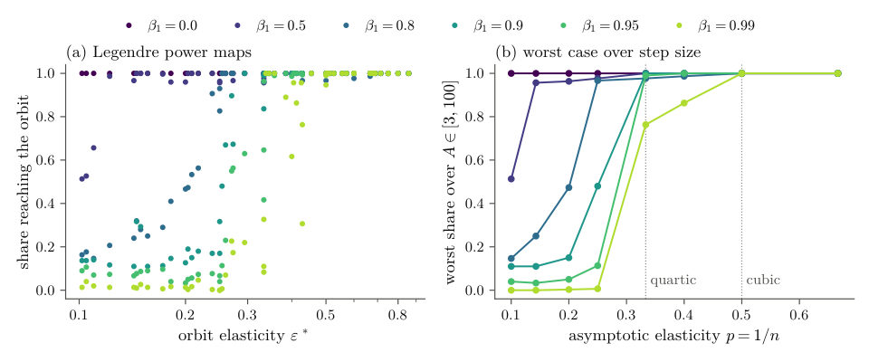
<figcaption class="paper-figure-caption"><b>Fig 3.</b> Figure 3: Legendre power maps in the reduced model. (a) Share of initial conditions that reach the symmetric orbit versus the orbit elasticity, all (p, A). (b) Worst share over A ∈[3, 100] versus the asymptotic elasticity p.</figcaption>
</figure>
<figure class="paper-figure-card">
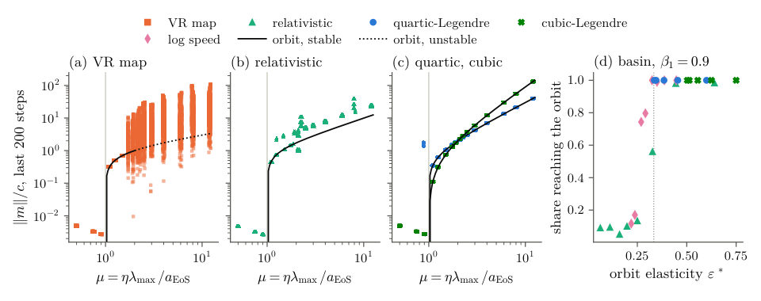
<figcaption class="paper-figure-caption"><b>Fig 4.</b> Figure 4: Exact quadratic (7,850 parameters, real data). (a–c) Late momentum norm ∥m∥/c versus µ = ηλmax/aEoS (markers: last 200 steps of three seeds) against the closed-form orbit (solid: stable, dotted: unstable). (d) Reduced model, β1 = 0.9: share of initial conditions that reach the orbit versus the orbit elasticity, for four families of maps.</figcaption>
</figure>
<figure class="paper-figure-card">
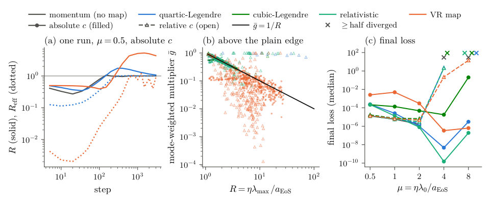
<figcaption class="paper-figure-caption"><b>Fig 5.</b> Figure 5: Full-batch EMA momentum (β1 = 0.9) on a tanh MLP, 1,000 CIFAR-10 images, 10 seeds per setting. Colour: map; filled circles and solid lines: absolute scale c = 0.05; open triangles and dashed lines: relative scale c = 2∥∇BL(θ0)∥. (a) One seed at µ = 0.5, absolute scale: sharpness ratio R = ηλmax/aEoS (solid) and effective ratio Reff of (12) (dotted). Plain momentum stays at the edge, R ≈1. With the quartic map the sharpness rises to 1.75 times the edge while Reff stays at one; with the VR map the sharpness rises to more than five times the edge while Reff mostly stays below one. (b) Mode-weighted multiplier ¯g of (12) against R at every diagnostic with R ≥1.1 after step 100, all...</figcaption>
</figure>
</div>

<p><strong>Summary.</strong> This paper treats deep learning optimization as a dynamical system, analyzing how physics-inspired optimizers behave beyond the standard stability limits. It introduces the concept of stable period-two orbits via kinetic maps and demonstrates that the loss of stability can be significantly delayed, offering new theoretical insights into training dynamics.</p>
<p><strong>Why it may be interesting.</strong> The deep connection between optimization dynamics, stability theory (bifurcations), and physical systems like Hamiltonian mechanics provides a rich analogy for understanding non-equilibrium dynamics in complex physical models.</p>
<details>
<summary>Detailed structure</summary>
<p><strong>Main problem.</strong> The paper investigates the stability and dynamics of physics-inspired optimization algorithms when training deep neural networks beyond the conventional 'edge of stability' (EoS). It models optimization as a discrete dynamical system.</p>
<p><strong>Main result.</strong> The authors show that kinetic maps can create a linearly stable period-two orbit beyond the EoS, and that the loss of stability can be significantly delayed, matching predictions from slow bifurcation theory.</p>
<p><strong>Method.</strong> The analysis uses concepts from dynamical systems theory, specifically analyzing kinetic maps derived from momentum gradients, and comparing these dynamics to established optimization algorithms like VRAdam.</p>
<p><strong>Model / system.</strong> The system is gradient descent with momentum, treated as a particle moving in the loss landscape. The analysis focuses on reduced models involving kinetic maps acting on the momentum variable.</p>
<p><strong>Key observables.</strong> Period-two orbits, elasticity (log-log slope of step length vs. momentum), and the delay time of instability (Neishtadt's theory).</p>
<p><strong>Important parameters / regimes.</strong> Learning rate ($\eta$), momentum decay ($eta_1$), and the map's elasticity ($\varepsilon$).</p>
<p><strong>Assumptions / limitations.</strong> The analysis relies on reducing the complex optimization dynamics to a manageable dynamical system model, and some results are compared against effective learning rate matching.</p>
<p><strong>Figures summary.</strong> Figures illustrate radial speed profiles, kinetic energies, and late iterates for various maps (VR, quartic, etc.), showing the existence and stability of periodic orbits.</p>
<p><strong>Paper structure.</strong> The paper moves from defining the problem (optimization beyond EoS) to analyzing specific reduced models (kinetic maps), deriving stability conditions (period-two orbits), and finally confirming these theoretical predictions through controlled sweep experiments and comparisons with deep learning benchmarks.</p>
</details>
<details>
<summary>Abstract</summary>
<p>Gradient descent with momentum can be viewed as a particle moving with friction in the loss landscape. In deep learning the learning rate is usually large, so training is a discrete dynamical system: in many full-batch experiments the sharpness grows to the optimizer's stability limit, the edge of stability (EoS), and training continues there. Physics-inspired optimizers change this motion; Velocity-Regularized Adam (VRAdam), for example, shrinks the step at high speed. We study kinetic maps, in which the step is the gradient of a kinetic energy of the momentum, and ask what they do beyond the EoS. (i) In a reduced model, a kinetic map creates a symmetric period-two orbit beyond the edge, strictly linearly stable if and only if the map's elasticity (the log-log slope of step length versus momentum) lies between 0 and 1; on it, training sits at an effective edge of stability. VRAdam's damper fails above twice the critical learning rate, where its kinetic energy is not convex; the Legendre dual of VRAdam's own Lagrangian is convex and passes at every learning rate. (ii) Because the sharpness rises gradually, the loss of stability is delayed, as in Neishtadt's theory of slowly swept bifurcations. In a network with a controlled sweep, the dynamics match this theory without fitted parameters, including the memory of where the sweep started and its erasure by noise. (iii) With momentum, reaching the oscillation also requires elasticity at large momentum: maps that bound the step have competing period-four and chaotic attractors already at beta1 = 0.9, while the cubic-Legendre map reached the oscillation from every sampled start up to beta1 = 0.99. Experiments on an exact quadratic problem, a full-batch MLP and ResNet-32 support the theory; on ResNet-18, much of the apparent benefit of the maps is reproduced by matching the effective learning rate.</p>
</details>
<p><sub><a href="#top">↑ back to top</a></sub></p>

<p><a id="paper-2610.27779"></a></p>
<h3 id="spin-fluctuations-and-nearly-isotropic-quasiparticles-in-the-doped-three-dimensional-hubbard-model"><a href="http://arxiv.org/abs/2610.27779v1">Spin fluctuations and nearly isotropic quasiparticles in the doped three-dimensional Hubbard model</a></h3>
<p><strong>Authors:</strong> Pengcheng Hou, Kun Chen, Youjin Deng<br>
<strong>Type:</strong> theory · <strong>Category:</strong> strongly correlated electrons · <strong>PDF:</strong> <a href="https://arxiv.org/pdf/2610.27779v1">https://arxiv.org/pdf/2610.27779v1</a><br>
<strong>Analysis basis:</strong> full PDF text, analyzed in chunks
<strong>Topic relevance:</strong> <code>Keldysh / 2PI / non-Gaussian methods</code> <strong>1/5</strong> · <code>analog quantum simulation</code> <strong>1/5</strong> · <code>methods for driven-dissipative</code> <strong>1/5</strong></p>
<div class="figure-strip-hint">↔ Scroll figures horizontally</div>
<div class="paper-figures-scroll">
<figure class="paper-figure-card">
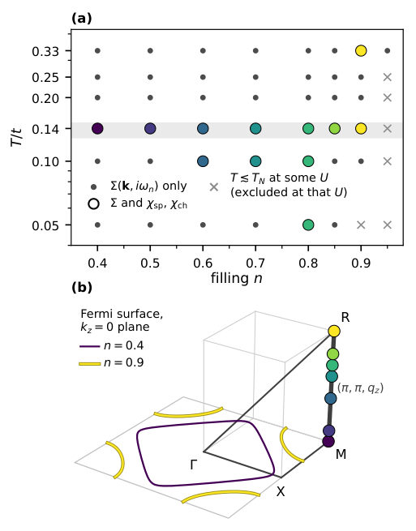
<figcaption class="paper-figure-caption"><b>Fig 1.</b> FIG. 1. The parameter set covers the doped paramagnet, and with increasing filling the spin-fluctuation peak moves along the nesting ridge from M to R. (a) Filling–temperature plane, logarithmic in T; the momentum-resolved self-energy is computed at all 48 points. Small dots: self-energy only; large circles: the twelve points that also carry the spin and charge susceptibilities, colored by filling, on the one scale used wherever color encodes filling; crosses: points at or beyond the magnetic boundary of Ref. [14] for at least one of U/t = 4, 6, 8, excluded at that coupling; gray band: the T/t = 0.14 isotherm. (b) Simple-cubic Brillouin zone: the path Γ– X–M–R–Γ of Figs. 7, 8 and 10; the...</figcaption>
</figure>
<figure class="paper-figure-card">
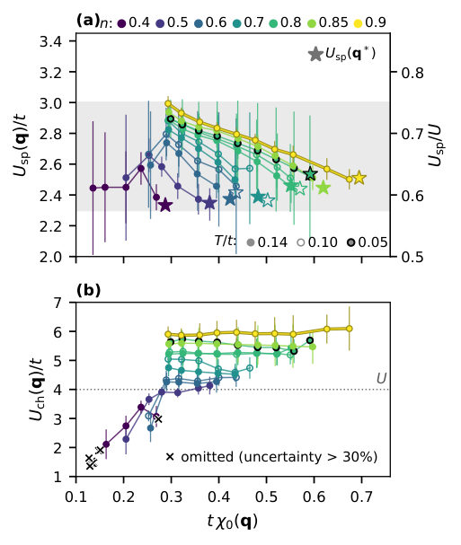
<figcaption class="paper-figure-caption"><b>Fig 2.</b> FIG. 2. The static spin vertex is screened to about two thirds of U and nearly uniform over the zone, lowest where the bare bubble is largest; the charge vertex grows with filling. Static vertices at U/t = 4 against the bare bubble χ0(q) at the same momentum for the eleven susceptibility points with T/t ≤0.14, as means over bins of width 0.04/t in χ0; bars: the mean single-momentum uncertainty in the bin. (a) Spin vertex Usp(q), on the right axis in units of U; stars: the peak vertex Usp(q∗); gray band: 2.3t ≤Usp ≤3.0t. (b) Charge vertex Uch(q); dotted: the bare U; crosses: the nine cells omitted because their relative uncertainty exceeds 30% (Ap- pendix C 1; none in the spin channel)....</figcaption>
</figure>
<figure class="paper-figure-card">
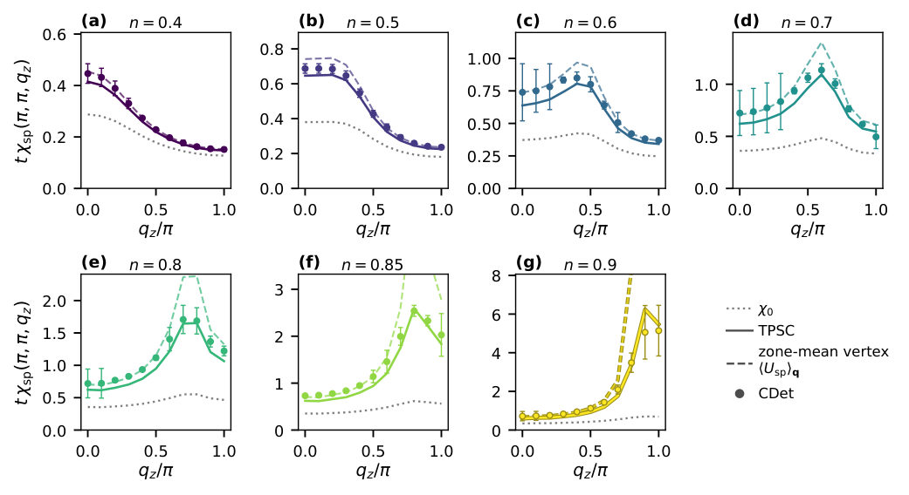
<figcaption class="paper-figure-caption"><b>Fig 3.</b> FIG. 3. With increasing filling the spin-fluctuation peak grows and moves along the nesting ridge; TPSC follows it, whereas a constant vertex equal to the zone mean overshoots it increasingly toward half filling. Static spin susceptibility along q = (π, π, qz) at U/t = 4 for the seven fillings of the T/t = 0.14 isotherm. Circles: CDet, direct route (bars: spread of the resummation estimators and truncation term); dotted gray: the bare bubble χ0, Eq. (8); solid: TPSC, χ0/(1 −U TPSC sp χ0/2); dashed: the same form with the zone-mean vertex ⟨Usp⟩q (blanked where it diverges).</figcaption>
</figure>
<figure class="paper-figure-card">
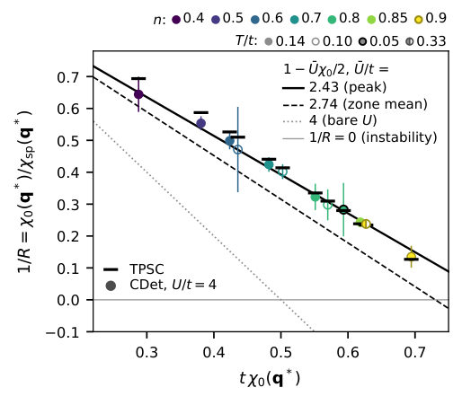
<figcaption class="paper-figure-caption"><b>Fig 4.</b> FIG. 4. The twelve peak heights fall on one line set by a common peak vertex, which lies below the zone-mean vertex. Inverse enhancement 1/R = χ0(q∗)/χsp(q∗) against the bare bubble at the peak for the twelve points at U/t = 4 (circles). Lines: 1 −¯Uχ0/2 with the common peak vertex ¯U = 2.43t (solid, direct route), with the average zone-mean vertex, 2.74t (dashed), and with the bare U (dotted); gray: 1/R = 0, the Stoner instability. Thick bars: the TPSC prediction at each point. Color encodes filling (key above the panel); fill encodes temperature: filled T/t = 0.14, open 0.10, black-edged 0.05, half-filled 0.33.</figcaption>
</figure>
<figure class="paper-figure-card">
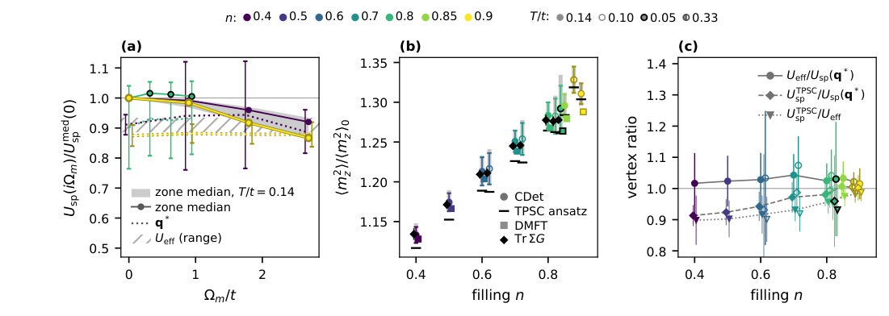
<figcaption class="paper-figure-caption"><b>Fig 5.</b> FIG. 5. The spin vertex becomes flat in q at finite frequency, the local moment is enhanced, and the sum-rule vertex lands near the static peak vertex (U/t = 4). (a) Usp(iΩm) divided by the static zone median: zone median (solid) and value at q∗(dotted; bars: its per-frequency uncertainty, offset in Ωm for clarity) at (n, T/t) = (0.4, 0.14), (0.9, 0.14) and (0.8, 0.05); gray band: range of the zone median on the T/t = 0.14 isotherm; hatched band: range of Ueff over the static zone median at the twelve points. (b) ⟨m2 z⟩/⟨m2 z⟩0 from the sum-rule D (circles; light bars include the tail model, Appendix C 5), the TPSC ansatz (black bars), single-site DMFT (squares) and the Galitskii–Migdal...</figcaption>
</figure>
</div>

<p><strong>Summary.</strong> This work calculates momentum-resolved properties of the 3D Hubbard model using advanced diagrammatic Monte Carlo methods. It finds that strong antiferromagnetic spin fluctuations are present near half-filling but are accompanied by quasiparticles that are remarkably isotropic. The results offer a critical test case for improving theoretical descriptions like DMFT in correlated electron systems.</p>
<p><strong>Why it may be interesting.</strong> The finding of strong spin fluctuations coexisting with nearly isotropic quasiparticles provides a crucial benchmark for extending DMFT and spin-fluctuation theories, which are central to understanding strongly correlated materials.</p>
<details>
<summary>Detailed structure</summary>
<p><strong>Main problem.</strong> The paper investigates spin fluctuations and the nature of quasiparticles in the doped three-dimensional Hubbard model, addressing the lack of controlled momentum-resolved results in this regime.</p>
<p><strong>Main result.</strong> Strong spin fluctuations coexist with nearly isotropic quasiparticles in the doped 3D Hubbard model, as evidenced by the momentum-resolved self-energy calculations.</p>
<p><strong>Method.</strong> The study employs connected-determinant diagrammatic Monte Carlo simulations, comparing results against TPSC theory and DMFT.</p>
<p><strong>Model / system.</strong> The system is the single-band Hubbard model on a simple-cubic lattice, described by the Hamiltonian involving hopping ($t$) and on-site repulsion ($U$). Parameters are varied across doping ($n=0.4-0.95$), temperature ($T/t=0.05-0.33$), and interaction strength ($U/t=4-8$).</p>
<p><strong>Key observables.</strong> Momentum-resolved self-energy, full-zone spin susceptibility, scattering rate, and quasiparticle weight.</p>
<p><strong>Important parameters / regimes.</strong> Focus is placed on $U/t=4$ and doping toward half-filling ($n=0.7-0.9$) at low temperatures ($T/t=0.14$).</p>
<p><strong>Assumptions / limitations.</strong> The analysis compares results from several theoretical frameworks (CDet, TPSC, DMFT), noting that TPSC theory overestimates the local scattering rate while DMFT misses the nonlocal part.</p>
<p><strong>Figures summary.</strong> The notes mention figures showing the spin-fluctuation peak moving along the nesting ridge as filling increases, and comparisons of the self-energy and susceptibilities across the Brillouin zone.</p>
<p><strong>Paper structure.</strong> The paper systematically computes and compares momentum-resolved self-energies and susceptibilities using CDet Monte Carlo, contrasting these results with predictions from TPSC and DMFT theories across a wide parameter space.</p>
</details>
<details>
<summary>Abstract</summary>
<p>Away from half filling and above its Neel temperature, the three-dimensional Hubbard model is a paramagnetic metal with antiferromagnetic spin fluctuations, where controlled momentum-resolved results have been lacking. Using connected-determinant diagrammatic Monte Carlo, we compute the momentum-resolved self-energy for n = 0.4-0.95, T/t = 0.05-0.33 and U/t = 4-8, and the full-zone spin susceptibility at twelve of these points, focusing on U/t = 4. At U/t = 4 and toward half filling the spin fluctuations become strong: for n = 0.7-0.9 at T/t = 0.14 they enhance the susceptibility peak up to sevenfold and raise the momentum-dependent part of the scattering rate to four to five times its second-order value. They are driven by an effective spin interaction screened to about 2U/3 and nearly uniform over the zone. Yet the peak height is set by the slightly smaller value of this interaction at the peak wave vector, and near magnetic order this small difference changes the height by a large factor. Two-particle self-consistent theory reproduces the peak because its sum rule fixes its single constant interaction near this value, but for n = 0.7-0.9 at T/t = 0.14 its self-energy overestimates the local scattering rate and underestimates the momentum-dependent part. Though strong, the fluctuations are short ranged, with a correlation length of at most about two lattice spacings, and for n = 0.7-0.9 and T/t &gt;= 0.14 the scattering rate near the Fermi surface varies by at most about 1% at fixed band energy, without hot spots. At U/t = 4 dynamical mean-field theory (DMFT) reproduces the local scattering rate and quasiparticle weight within a few percent, and the nonlocal part it misses is approximately a function of the band energy. Strong spin fluctuations thus coexist with nearly isotropic quasiparticles, and the results provide a benchmark for extensions of DMFT and for spin-fluctuation theories.</p>
</details>
<p><sub><a href="#top">↑ back to top</a></sub></p>

<p><a id="paper-2610.27709"></a></p>
<h3 id="a-high-speed-large-aperture-3d-printed-laser-shutter-for-cold-atom-experiments"><a href="http://arxiv.org/abs/2610.27709v1">A high-speed, large-aperture 3D printed laser shutter for cold atom experiments</a></h3>
<p><strong>Authors:</strong> Samantha L. Rubinstein, Charles W. Woffinden, Maarten T. M. Christenhusz, Guillaume Gauthier, Tyler W. Neely<br>
<strong>Type:</strong> experiment · <strong>Category:</strong> other · <strong>PDF:</strong> <a href="https://arxiv.org/pdf/2610.27709v1">https://arxiv.org/pdf/2610.27709v1</a><br>
<strong>Analysis basis:</strong> full PDF text, analyzed in chunks
<strong>Topic relevance:</strong> <code>quantum measurements</code> <strong>1/5</strong> · <code>quantum optics experiment</code> <strong>1/5</strong></p>
<div class="figure-strip-hint">↔ Scroll figures horizontally</div>
<div class="paper-figures-scroll">
<figure class="paper-figure-card">
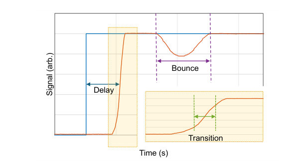
<figcaption class="paper-figure-caption"><b>Fig 1.</b> FIG. 1. Illustrative graph showing delay time and bounce parame- ters. The blue line shows the TTL signal and the orange line shows the photodiode response to illumination after the shutter. Insert: re- duced time-base view of photodiode response of shutter to illustrate the transition time.</figcaption>
</figure>
<figure class="paper-figure-card">
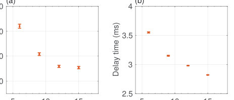
<figcaption class="paper-figure-caption"><b>Fig 2.</b> FIG. 3. Shutter performance for fall transition times at different ap- plied H-bridge supply voltages (VCC). (a) is transition time, (b) is delay time. Standard errors calculated from repeat measurements are displayed.</figcaption>
</figure>
<figure class="paper-figure-card">
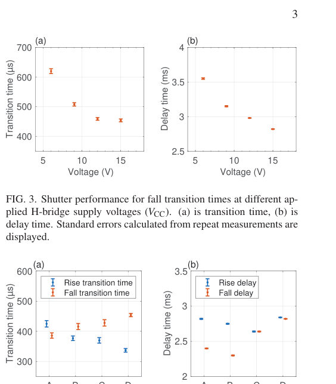
<figcaption class="paper-figure-caption"><b>Fig 3.</b> FIG. 4. Performance comparison between different shutters operated at 15 V, (a) shows rise and fall transition times, while (b) shows rise and fall delay times. Data are laterally offset for clarity.</figcaption>
</figure>
<figure class="paper-figure-card">
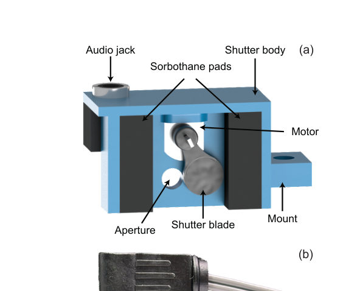
<figcaption class="paper-figure-caption"><b>Fig 4.</b> FIG. 2. (a) Annotated CAD render of the shutter. (b) Photo of the shutter mounted on an optical post. Electrical connections between the motor and audio jack exist at the rear of the shutter. Schematics and CAD files are provided within Ref. 10.</figcaption>
</figure>
<figure class="paper-figure-card">
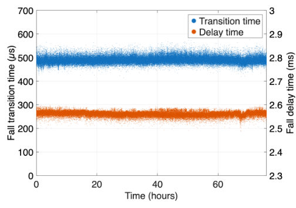
<figcaption class="paper-figure-caption"><b>Fig 5.</b> FIG. 5. Long-term performance for one shutter over 120,000 close transitions. Performance is consistent across the time period.</figcaption>
</figure>
</div>

<p><strong>Summary.</strong> This paper presents a novel, high-speed, and large-aperture laser shutter fabricated using 3D printing for use in cold atom experiments. The device achieves fast switching times and high repeatability, overcoming limitations of existing, expensive, or small-aperture commercial shutters. It provides an accessible and scalable solution for precise light control in quantum physics setups.</p>
<p><strong>Why it may be interesting.</strong> This work directly addresses a critical piece of experimental hardware required for advanced AMO research, providing a robust, low-cost tool for time-resolved quantum optics experiments.</p>
<details>
<summary>Detailed structure</summary>
<p><strong>Main problem.</strong> Cold atom experiments require optical shutters that are rapid, repeatable, and have a large aperture, as existing solutions are often costly, small, or slow.</p>
<p><strong>Main result.</strong> The authors developed a 3D-printable laser shutter achieving a large 4.5 mm aperture with fast switching times ($399 \mu	ext{s}$) and high repeatability, offering an accessible alternative for optical control.</p>
<p><strong>Method.</strong> The system was built using 3D printing and driven by an H-bridge circuit, with performance characterized by measuring delay and transition times using a fast photodiode.</p>
<p><strong>Model / system.</strong> The physical system is a custom, 3D-printed laser shutter designed for cold atom applications. It uses a mechanical blade actuated by an electronic circuit to precisely control the passage of a laser beam.</p>
<p><strong>Key observables.</strong> Switching times ($399 \mu	ext{s}$), delay times ($2.7 	ext{ ms}$), shutter speed ($7.0 	ext{ ms}^{-1}$), and optical power handling capacity ($>100 	ext{ mW}$).</p>
<p><strong>Important parameters / regimes.</strong> Aperture diameter ($4.5 	ext{ mm}$), operating voltage ($   ext{VCC}$ range), and the need to minimize bounce and optical leakage.</p>
<p><strong>Assumptions / limitations.</strong> The design assumes the use of 3D printing materials (PLA+, Onyx) and that the electronic control (RC network) can reliably drive the motor for high speed.</p>
<p><strong>Figures summary.</strong> Figures illustrate the delay time and bounce parameters via photodiode response, show the CAD design, and plot performance metrics (transition/delay times) against the applied supply voltage ($  ext{VCC}$).</p>
<p><strong>Paper structure.</strong> The paper introduces the problem of optical control in cold atom experiments, details the novel 3D-printed mechanical and electronic design, presents comprehensive characterization data (speed, repeatability, stability), and concludes by positioning the device as a scalable solution.</p>
</details>
<details>
<summary>Abstract</summary>
<p>Cold atom experiments require optical shutters with rapid and repeatable actuation. Existing solutions often involve high cost, limited aperture diameter and slow transitioning. We present a 3D-printable shutter design featuring a large aperture of 4.5 mm diameter, low-cost assembly, and robust performance. The device achieves switching times of $399\pm8~μ$s with delays of $2.7\pm0.2$ ms for a fully illuminated aperture, with four different shutters demonstrating repeatable performance. We measure the shutter speed to be $7.0\pm0.1$ m/s. This approach offers an accessible, scalable solution for cold atom and other optical experiments requiring multiple shutters with precise light control and avoids the need to resize or precision-align a beam through an aperture.</p>
</details>
<p><sub><a href="#top">↑ back to top</a></sub></p>

<p><a id="paper-2610.27768"></a></p>
<h3 id="bidirectional-path-integral-monte-carlo-simulation-of-quantum-circuits"><a href="http://arxiv.org/abs/2610.27768v1">Bidirectional Path Integral Monte Carlo Simulation of Quantum Circuits</a></h3>
<p><strong>Authors:</strong> Luis Paulo Santos, Thomas Bashford-Rogers<br>
<strong>Type:</strong> theory · <strong>Category:</strong> numerical methods · <strong>PDF:</strong> <a href="https://arxiv.org/pdf/2610.27768v1">https://arxiv.org/pdf/2610.27768v1</a><br>
<strong>Analysis basis:</strong> full PDF text, analyzed in chunks
<strong>Topic relevance:</strong> <code>methods for driven-dissipative</code> <strong>1/5</strong></p>
<div class="figure-strip-hint">↔ Scroll figures horizontally</div>
<div class="paper-figures-scroll">
<figure class="paper-figure-card">
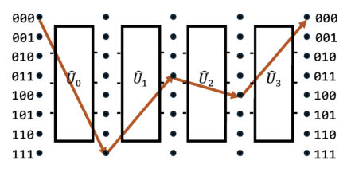
<figcaption class="paper-figure-caption"><b>Fig 1.</b> Figure 1: A path from |000⟩to |000⟩across a circuit with depth L = 4).</figcaption>
</figure>
<figure class="paper-figure-card">
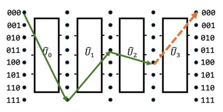
<figcaption class="paper-figure-caption"><b>Fig 2.</b> Figure 2: Forward importance sampling: up to layer L −1 (green arrows) the path is guaranteed to have both non-zero amplitude and probability. The deterministic connection to the final state (orange dashed arrow) has probability 1, but its amplitude ⟨Ψf| ˆUL−1|sL−1⟩can be zero.</figcaption>
</figure>
<figure class="paper-figure-card">
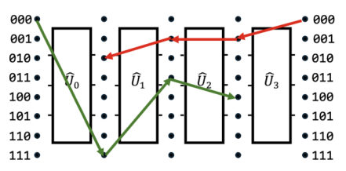
<figcaption class="paper-figure-caption"><b>Fig 3.</b> Figure 3: Forward (green) and backward (red) importance sampled path segments for L = 4.</figcaption>
</figure>
<figure class="paper-figure-card">

<figcaption class="paper-figure-caption"><b>Fig 4.</b> Figure 4 illustrates the 4 paths built from the example in figure 3.</figcaption>
</figure>
<figure class="paper-figure-card">
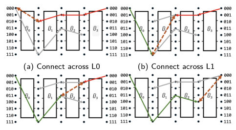
<figcaption class="paper-figure-caption"><b>Fig 5.</b> Figure 4: Paths generated by connecting forward and back- ward path segments. The dashed dark orange arrow repre- sents the deterministic connection. Non-used path segments are dimmed to gray.</figcaption>
</figure>
</div>

<p><strong>Summary.</strong> This paper presents a novel bidirectional Monte Carlo algorithm to estimate quantum circuit transition amplitudes by sampling Feynman paths. By combining random walks from both input and output states with Multiple Importance Sampling, the method achieves superior convergence rates in sparse path spaces. This allows for the simulation of extremely large quantum circuits while maintaining polynomial space complexity.</p>
<p><strong>Why it may be interesting.</strong> The development of efficient classical simulation techniques for quantum amplitudes, particularly those leveraging path integral methods, is crucial for understanding the limits of classical computation relative to quantum hardware.</p>
<details>
<summary>Detailed structure</summary>
<p><strong>Main problem.</strong> The primary goal is to estimate the transition amplitudes, $\langle \Psi_f | \hat{U} | \Psi_0 
angle$, for quantum circuits, which is equivalent to calculating a path integral over the computational basis states.</p>
<p><strong>Main result.</strong> The proposed bidirectional Monte Carlo algorithm exhibits a superior convergence rate compared to unidirectional sampling, allowing for the simulation of very large quantum circuits (up to 4096 qubits) while maintaining favorable space complexity.</p>
<p><strong>Method.</strong> The authors propose an approximate classical algorithm using Monte Carlo sums over bidirectionally sampled Feynman paths, enhanced by Multiple Importance Sampling (MIS) for variance reduction.</p>
<p><strong>Model / system.</strong> The system modeled is a general quantum circuit, represented by a time-evolution operator $\hat{U}$, whose action is analyzed via the path integral formulation over the computational basis states.</p>
<p><strong>Key observables.</strong> Transition amplitude $\langle \Psi_f | \hat{U} | \Psi_0 
angle$, variance of the Monte Carlo estimator, and the sparsity of the path space.</p>
<p><strong>Important parameters / regimes.</strong> Circuit size (up to 4096 qubits), path space cardinality, and the inverse squared average phase ($\chi_P$), which characterizes the numerical sign problem.</p>
<p><strong>Assumptions / limitations.</strong> The analysis assumes ideal, noise-free conditions, and the primary limitation discussed is the numerical sign problem arising from destructive interference in the path space.</p>
<p><strong>Figures summary.</strong> Figures compare the variance ratio of bidirectional vs. unidirectional estimators against sparsity and $\chi$, and show how the variance scales with $\chi$ for fixed sample sizes.</p>
<p><strong>Paper structure.</strong> The paper introduces the problem, details the bidirectional Monte Carlo estimator ($   ilde{IBS}$) and compares it to the forward estimator ($    ilde{IFS}$), proves the convergence advantage based on path space sparsity, and discusses limitations regarding the sign problem.</p>
</details>
<details>
<summary>Abstract</summary>
<p>We propose an approximate classical algorithm for estimating quantum circuits' transition amplitudes, $\langle Ψ_f | \hat{U} | Ψ_0 \rangle$, based on Monte Carlo sums over bidirectionally sampled Feynman paths. The algorithm generates Feynman paths, i.e., sequences of intermediate computational basis states, by combining information from random walks initiated at both the input and output states, $Ψ_0$ and $Ψ_f$, respectively. It further combines this bidirectional approach with Multiple Importance Sampling, a powerful variance reduction technique that avoids variance peaks caused by divisions by the very low sampling probabilities associated with hard to reach paths. Empirical data demonstrate the superior convergence rate exhibited by the bidirectional algorithm over a unidirectional, forward-only sampling approach. This superiority is due to the effectiveness of the proposed algorithm in finding and weighting paths with non-zero amplitude in an extremely sparse path space. Sum of paths algorithms exhibit very favourable space complexity. Monte Carlo replaces exhaustive enumeration of the exponentially large path space by stochastic sampling, the computational cost being determined by the variance of the estimator. This work demonstrates these two features by presenting results on very large quantum circuits, with up to 4096 qubits.</p>
</details>
<p><sub><a href="#top">↑ back to top</a></sub></p>

<p><a id="paper-2610.28152"></a></p>
<h3 id="enhancement-of-li-and-na-storage-in-janus-hfsse-monolayers-by-co-induced-electron-deficient-chalcogen-sites-a-first-principles-study"><a href="http://arxiv.org/abs/2610.28152v1">Enhancement of Li and Na Storage in Janus HfSSe Monolayers by Co-Induced Electron-Deficient Chalcogen Sites: A First-Principles Study</a></h3>
<p><strong>Authors:</strong> Md. Muktadir Hasan, Md. Mafizul Islam, Ahmed Zubair<br>
<strong>Type:</strong> theory · <strong>Category:</strong> other · <strong>PDF:</strong> <a href="https://arxiv.org/pdf/2610.28152v1">https://arxiv.org/pdf/2610.28152v1</a><br>
<strong>Analysis basis:</strong> full PDF text, analyzed in chunks
<strong>Topic relevance:</strong> <code>Keldysh / 2PI / non-Gaussian methods</code> <strong>1/5</strong></p>
<div class="figure-strip-hint">↔ Scroll figures horizontally</div>
<div class="paper-figures-scroll">
<figure class="paper-figure-card">

<figcaption class="paper-figure-caption"><b>Fig 1.</b> Figure 1: Optimized structure of the pristine HfSSe monolayer: (a) side view, (b) top view, and (c) possible adsorption sites considered for Li and Na adsorption.</figcaption>
</figure>
<figure class="paper-figure-card">

<figcaption class="paper-figure-caption"><b>Fig 2.</b> Figure 2: Phonon and adsorption characteristics of Janus HfSSe: (a) phonon dispersion and phonon density of states of pristine HfSSe, and adsorption energies of Li and Na atoms at different surface sites of (b) pristine HfSSe and (c) Co-doped HfSSe.</figcaption>
</figure>
<figure class="paper-figure-card">

<figcaption class="paper-figure-caption"><b>Fig 3.</b> Figure 3: Co-doped HfSSe structure and AIMD results at 300 K for 10 ps: (a) optimized top view, (b) total energy variation, and (c) temperature fluctuation.</figcaption>
</figure>
<figure class="paper-figure-card">

<figcaption class="paper-figure-caption"><b>Fig 4.</b> Figure 4: (a) Band structure of pristine HfSSe (b) PDOS of pristine HfSSe (c) band structure of Co-doped HfSSe (d) PDOS of Co-doped HfSSe.</figcaption>
</figure>
<figure class="paper-figure-card">

<figcaption class="paper-figure-caption"><b>Fig 5.</b> Figure 5: Spin-polarized band structures and total density of states after first-layer adsorption: (a,b) Li on pristine HfSSe, (c,d) Li on Co-doped HfSSe, (e,f) Na on pristine HfSSe, and (g,h) Na on Co-doped HfSSe. The Fermi level is set to 0 eV.</figcaption>
</figure>
</div>

<p><strong>Summary.</strong> This theoretical study investigates Co-doping in Janus HfSSe monolayers to improve their use as anode materials for Li-ion and Na-ion batteries. Using DFT, the authors demonstrate that Co doping strengthens alkali-metal binding by creating electron-deficient sites, leading to significantly higher theoretical storage capacities and maintaining fast ion diffusion pathways.</p>
<p><strong>Why it may be interesting.</strong> While focused on solid-state electrochemistry, the use of first-principles methods to model charge transfer, electronic structure changes upon doping, and ion transport barriers is highly relevant to understanding correlated electron behavior in engineered quantum materials.</p>
<details>
<summary>Detailed structure</summary>
<p><strong>Main problem.</strong> The research addresses the critical need for advanced, high-capacity, and durable anode materials for next-generation rechargeable batteries, specifically for Li-ion and Na-ion systems.</p>
<p><strong>Main result.</strong> Co-doping the Janus HfSSe monolayer significantly enhances its electrochemical performance, leading to increased theoretical capacities for both Li and Na storage and maintaining favorable ion diffusion kinetics.</p>
<p><strong>Method.</strong> The study employs first-principles density functional theory (DFT) calculations, including structural optimization, phonon calculations, and the CI-NEB method for diffusion barriers.</p>
<p><strong>Model / system.</strong> The physical system is the Janus HfSSe monolayer, which is computationally modified by substituting Cobalt (Co) atoms. The investigation compares the pristine material against the Co-doped variant.</p>
<p><strong>Key observables.</strong> Alkali-metal adsorption energies, theoretical specific capacities ($   ext{mAh g}^{-1}$), average open-circuit voltages ($  ext{V}$), and minimum ion migration barriers ($   ext{eV}$).</p>
<p><strong>Important parameters / regimes.</strong> The doping level and the resulting electron-deficient sites created by Co substitution are key parameters influencing binding strength.</p>
<p><strong>Assumptions / limitations.</strong> The calculations rely on DFT approximations (PBE functional, DFT-D3 correction) and assume that the calculated electronic and structural properties predict real-world electrochemical performance.</p>
<p><strong>Figures summary.</strong> Figures likely illustrate the optimized structure, phonon dispersion, adsorption energy comparisons (pristine vs. Co-doped), and electronic structure (band structure/PDOS) for the materials.</p>
<p><strong>Paper structure.</strong> The paper follows a structure of problem identification (battery anode need), material selection ($    ext{HfSSe}$), computational methodology (DFT details), detailed results showing the effect of Co-doping on binding energy and capacity, and a final conclusion identifying the material as promising.</p>
</details>
<details>
<summary>Abstract</summary>
<p>The growing demand for high-capacity, fast-charging, and durable rechargeable batteries has intensified the search for advanced electrode materials, with two-dimensional materials offering large surface-to-mass ratios and short ion-diffusion pathways. Here, pristine and Co-doped Janus HfSSe monolayers were investigated as anode materials for Li-ion and Na-ion batteries using first-principles density functional theory. Pristine HfSSe was found to be dynamically stable and exhibited a 0.85 eV band gap, while Co substitution shifted the Fermi level toward the valence-band region. Adsorption of the first Li or Na layer induced metallic behavior, thereby improving charge transport. Co doping strengthened alkali-metal binding, with the most favorable Li and Na adsorption energies changing from -2.6125 and -1.9800 eV to -3.7405 and -3.0529 eV, respectively. Co doping created electron-deficient sites that enhanced Li/Na binding. Co-doped HfSSe accommodated up to four Li layers and three Na layers, increasing the theoretical capacities from 555.43 to 776.19 mAh/g for Li and from 370.29 to 582.14 mAh/g for Na. The average open-circuit voltages were 0.62 V for Li and 0.29-0.30 V for Na, with minimum migration barriers of 0.2153 and 0.1044 eV, respectively. These results identified Co-doped Janus HfSSe as a promising anode material for Li-ion and Na-ion batteries.</p>
</details>
<p><sub><a href="#top">↑ back to top</a></sub></p>

<p><a id="paper-2610.28596"></a></p>
<h3 id="entanglement-distribution-in-quantum-switch-networks-memory-limits-and-achievability"><a href="http://arxiv.org/abs/2610.28596v1">Entanglement Distribution in Quantum Switch Networks: Memory Limits and Achievability</a></h3>
<p><strong>Authors:</strong> Lei Hu, Alptug Aytekin, Stavros Mitrolaris, Mohamed Nomeir, Subhankar Banerjee, Sennur Ulukus, Saikat Guha<br>
<strong>Type:</strong> theory · <strong>Category:</strong> quantum information and computing · <strong>PDF:</strong> <a href="https://arxiv.org/pdf/2610.28596v1">https://arxiv.org/pdf/2610.28596v1</a><br>
<strong>Analysis basis:</strong> full PDF text, analyzed in chunks
<strong>Topic relevance:</strong> <code>quantum measurements</code> <strong>1/5</strong></p>
<div class="figure-strip-hint">↔ Scroll figures horizontally</div>
<div class="paper-figures-scroll">
<figure class="paper-figure-card">

<figcaption class="paper-figure-caption"><b>Fig 1.</b> Figure 1: System model of the quantum switch network. Each user is connected to the central switch through a quantum channel. When Bell-pair generation on a user-switch link succeeds, the two halves (ui, mi) are stored at the user and the switch, respectively. Otherwise, the corresponding memory remains empty.</figcaption>
</figure>
<figure class="paper-figure-card">

<figcaption class="paper-figure-caption"><b>Fig 2.</b> Figure 2: Factory protocol for distributing the four-qubit path graph state. Users 3 and 4 establish Bell links at t = ∆t, while users 1 and 2 generate the links at t = 2∆t and t = 3∆t, respectively. The switch stores its halves of the successful Bell pairs until all four links are available. It then prepares the target state on four auxiliary qubits a1, . . . , a4. The switch performs a Bell-state measurement on each pair (ai, mi) to teleport the state of a1, . . . , a4 to the user qubits u1, . . . , u4. Each user applies a single-qubit Pauli correction based on the corresponding measurement outcome. The users then share the target graph state.</figcaption>
</figure>
<figure class="paper-figure-card">

<figcaption class="paper-figure-caption"><b>Fig 3.</b> Figure 3: Piecemaker protocol for distributing the four-qubit path graph state, where users 3 and 4 establish their Bell links at t = ∆t, while users 1 and 2 succeed at t = 2∆t and t = 3∆t, respectively. (a) When users 3 and 4 generate their Bell links, the set C = {3, 4} is a vertex cover of the LC-equivalent graph G′. The switch then retains m3 and m4 as persistent qubits, and processes each later link upon arrival. It releases m1 at t = 2∆t and all remaining switch qubits at t = 3∆t. After all Bell links are generated and processed, the users’ qubits u1, . . . , u4 form the graph state G′. By performing the single-qubit LC operations τ1, τ3, τ2, the users share the target graph state P4....</figcaption>
</figure>
<figure class="paper-figure-card">

<figcaption class="paper-figure-caption"><b>Fig 4.</b> Figure 4: The first two steps of distributing the path graph P4 under the Bell-link arrival order π = (4, 3, 1, 2). In Step 1, the switch retains m4 and applies Hm4, which gives the graph state m4 −u4. In Step 2, the switch processes the Bell pair for user 3 using gates, measurement, and feed-forward correction shown in the figure. It releases m3 and obtains the graph state m4 −u3 −u4. Note that only m4 remains at the switch after each step.</figcaption>
</figure>
<figure class="paper-figure-card">

<figcaption class="paper-figure-caption"><b>Fig 5.</b> Figure 5: The final two steps of distributing the path graph P4 under the Bell-link arrival order π = (4, 3, 1, 2). In Step 3, the switch processes the new Bell pair for user 1, using the operations shown in the figure. It releases m1 and obtains the graph state u1 −m4 −u3 −u4, retaining only m4. In Step 4, the switch teleports the state of m4 to u2 through the fresh Bell pair |Φ+⟩m2u2. After the Pauli correction, the users share the target graph state u1 − u2 −u3 −u4. Both m4 and m2 are released, and no qubits remain stored in the switch.</figcaption>
</figure>
</div>

<p><strong>Summary.</strong> This work tackles the challenge of minimizing quantum memory usage in quantum switch networks used to distribute graph states. The authors introduce an optimal online stabilizer-transition protocol that achieves the theoretical minimum memory requirement. This protocol significantly improves upon existing methods, showing substantial memory reductions, particularly for path graphs.</p>
<p><strong>Why it may be interesting.</strong> It provides a resource-efficient theoretical framework for quantum networking, directly addressing the practical limitations of quantum memory required for large-scale quantum computation and communication.</p>
<details>
<summary>Detailed structure</summary>
<p><strong>Main problem.</strong> The paper aims to characterize the minimum persistent quantum memory required at a central switch to distribute a graph state among multiple remote users.</p>
<p><strong>Main result.</strong> The authors developed an online stabilizer-transition protocol that achieves the theoretical minimum memory limit, significantly outperforming existing protocols like Piecemaker, especially for path graphs.</p>
<p><strong>Method.</strong> The core method involves developing and analyzing an online stabilizer-transition protocol that processes Bell pairs as they arrive, maintaining a minimal stabilizer purification of the target state.</p>
<p><strong>Model / system.</strong> The model is a quantum switch network where a central switch connects to $n$ remote users. Entanglement distribution relies on establishing Bell pairs over probabilistic quantum links.</p>
<p><strong>Key observables.</strong> Minimum persistent switch memory (qubits stored at the switch), maximum storage time ($\Delta t$), and the resulting graph state $|G\rangle$.</p>
<p><strong>Important parameters / regimes.</strong> The number of users ($n$), the specific graph structure (e.g., path graph $P_n$), and the arrival order of Bell links.</p>
<p><strong>Assumptions / limitations.</strong> The switch can perform local quantum operations (CZ, CX, measurements) and classical feed-forward rapidly compared to the entanglement generation time. The protocol assumes the ability to maintain a minimal stabilizer purification.</p>
<p><strong>Figures summary.</strong> Figure 1 illustrates the quantum switch network model. Figures 2 and 3 compare the memory requirements of the Factory and Piecemaker protocols for $P_4$ under different link arrival orders.</p>
<p><strong>Paper structure.</strong> The paper establishes the problem by reviewing existing protocols (Factory, Piecemaker), derives a fundamental lower bound on memory, and then introduces and proves an online stabilizer-transition protocol that achieves this bound, concluding with comparisons and forward constructions.</p>
</details>
<details>
<summary>Abstract</summary>
<p>We study the minimum persistent memory required to distribute a graph state through a quantum switch. Specifically, consider a central switch that assists $n$ remote users in distributing a graph state, using independently generated user-switch Bell pairs. Since Bell-pair generation is probabilistic, different links generally succeed at different times. When a Bell-pair is generated, the qubits may need to be stored in memory while waiting for other links to succeed. Recently, new protocols have been proposed to reduce this storage overhead by processing and releasing some switch qubits before all Bell links are available. However, these protocols do not characterize the minimum persistent switch memory required at each stage. Moreover, the local-cover method in the state-of-the-art Piecemaker protocol is computationally expensive for general target graphs.   In this work, we characterize the minimum persistent switch memory required after any subset of users' Bell links are generated and processed. We then develop an online stabilizer-transition protocol that attains this limit, which can be implemented in polynomial time in the number of qubits $n$. Remarkably, this optimal protocol can provide substantial memory reductions over existing heuristic approaches. In particular, for the path graph $P_n$ over $n$ users, Piecemaker protocol requires at least $\lfloor n/2\rfloor$ qubits of peak persistent memory for \textit{every Bell-links generation order}, whereas under the order $(1,2,\ldots,n)$, our protocol requires only one persistent switch qubit. Finally, the same stabilizer-transition framework also provides a direct forward construction for sequential graph-state generation using the minimum number of quantum emitters, equal to the maximum of the height function.</p>
</details>
<p><sub><a href="#top">↑ back to top</a></sub></p>

<p><a id="paper-2610.27154"></a></p>
<h3 id="exact-spectral-integrability-of-a-finite-channel-random-schrodinger-operator-from-fermionization-of-the-dyson-riccati-gas-to-kontsevich-integral"><a href="http://arxiv.org/abs/2610.27154v1">Exact spectral integrability of a finite-channel random Schrödinger operator: from fermionization of the Dyson--Riccati gas to Kontsevich integral</a></h3>
<p><strong>Authors:</strong> Yan V. Fyodorov, Pierre Le Doussal<br>
<strong>Type:</strong> theory · <strong>Category:</strong> disordered systems and neural networks · <strong>PDF:</strong> <a href="https://arxiv.org/pdf/2610.27154v1">https://arxiv.org/pdf/2610.27154v1</a><br>
<strong>Analysis basis:</strong> full PDF text, analyzed in chunks
<strong>Topic relevance:</strong> <code>Keldysh / 2PI / non-Gaussian methods</code> <strong>1/5</strong></p>
<div class="figure-strip-hint">↔ Scroll figures horizontally</div>
<div class="paper-figures-scroll">
<figure class="paper-figure-card">

<figcaption class="paper-figure-caption"><b>Fig 1.</b> FIG. 1. Finite-channel density of states and the rounding of the collective edge, at fixed disorder J = 1 (so T = J2/2N), evaluated from the exact expressions. (a) ρN(E)/N for N = 1, 2, 3, 5 together with the N = ∞mean-field density, obtained in closed form in Ref. [28]; the vanishing of the asso- ciated cubic discriminant reproduces E∗= −3</figcaption>
</figure>
</div>

<p><strong>Summary.</strong> This work provides an exact solution for the spectral properties of a finite-channel random Schrödinger operator by mapping its dynamics to a free-fermion system. Key results include expressing the density of states via an Airy Hankel determinant and determining the universal scaling profile of the spectral edge using Painlevé I solutions. This offers deep theoretical insight into spectral statistics in disordered quantum systems.</p>
<p><strong>Why it may be interesting.</strong> The connection between random matrix theory, integrable systems (Painlevé equations), and spectral statistics provides powerful, exact tools for understanding localization and spectral rigidity in disordered quantum systems, which is highly relevant to AMO physics.</p>
<details>
<summary>Detailed structure</summary>
<p><strong>Main problem.</strong> The paper solves exactly the Riccati dynamics associated with a quasi-one-dimensional random Schrödinger operator for arbitrary finite channel number N.</p>
<p><strong>Main result.</strong> The system's spectral properties, including the density of states and Lyapunov growth rate, are determined by an Airy Hankel $\tau$-function, which exhibits universal scaling near the spectral edge governed by Painlevé I.</p>
<p><strong>Method.</strong> The analysis maps the problem to free fermions, utilizing determinantal formulas (Hankel determinants) and employing saddle-point approximations and large-N limits.</p>
<p><strong>Model / system.</strong> The model is an N-channel random Schrödinger operator with a white-noise potential, whose dynamics are governed by the Riccati equation. The system is analyzed in the $\beta=2$ unitary symmetry class.</p>
<p><strong>Key observables.</strong> Inverse Density of States (IDOS), total Lyapunov growth rate, one-point density $n(\lambda)$, and the spectral edge profile.</p>
<p><strong>Important parameters / regimes.</strong> Finite channel number $N$, sample length $L$, and the symmetry parameter $\beta=2$.</p>
<p><strong>Assumptions / limitations.</strong> The analysis relies on the existence of a global projective boundary condition and the validity of the free-fermion representation.</p>
<p><strong>Figures summary.</strong> Figures illustrate the finite-N Lifshitz tail below the spectral edge and compare the finite-N density to the $N=\infty$ mean-field density.</p>
<p><strong>Paper structure.</strong> The paper progresses from solving the Riccati dynamics to finding the free-fermion representation, deriving the spectral density via Hankel determinants, and finally analyzing the critical behavior near the spectral edge using Painlevé equations.</p>
</details>
<details>
<summary>Abstract</summary>
<p>We solve exactly, for arbitrary finite channel number $N$, the Riccati dynamics of a quasi-one-dimensional random matrix Schrödinger operator with Hermitian white-noise potential in the $β=2$ unitary symmetry class. The associated Dyson--Riccati eigenvalue gas admits an exact free-fermion representation at any sample length $L$, which in the limit $L\to \infty$ expresses the density of states and the total Lyapunov growth rate exactly through a single Airy Hankel $τ$-function providing multichannel generalization of $N=1$ Halperin--Thouless formulas. The $τ-$function further admits an outgoing-contour Kontsevich matrix Airy integral representation. Its saddle-point and double-scaling analyses give, in a unified way, the finite-channel density Lifshitz tail, and the large-$N$ spectral edge. In particular, for $N\gg 1$ the sharp $N=\infty$ edge is softened within an $N^{-4/5}$ spectral window, with its profile governed by the tritronquée solution of Painlevé I. We conjecture universality of this quasi-one-dimensional scaling edge profile for a broad class of $β=2$ random band matrices.</p>
</details>
<p><sub><a href="#top">↑ back to top</a></sub></p>

<p><a id="paper-2610.27761"></a></p>
<h3 id="good-math809math-numbers-a-shell-optimized-route-to-the-thermodynamic-limit-in-quantum-monte-carlo-calculations-of-the-high-density-two-dimensional-electron-gas"><a href="http://arxiv.org/abs/2610.27761v1">Good-$Γ$ Numbers: A Shell-Optimized Route to the Thermodynamic Limit in Quantum Monte Carlo Calculations of the High-Density Two-Dimensional Electron Gas</a></h3>
<p><strong>Authors:</strong> S. Azadi, T. D. Kühne, A. Principi, M. S. Bahramy<br>
<strong>Type:</strong> theory · <strong>Category:</strong> strongly correlated electrons · <strong>PDF:</strong> <a href="https://arxiv.org/pdf/2610.27761v1">https://arxiv.org/pdf/2610.27761v1</a><br>
<strong>Analysis basis:</strong> full PDF text, analyzed in chunks
<strong>Topic relevance:</strong> <code>Keldysh / 2PI / non-Gaussian methods</code> <strong>1/5</strong></p>
<div class="figure-strip-hint">↔ Scroll figures horizontally</div>
<div class="paper-figures-scroll">
<figure class="paper-figure-card">

<figcaption class="paper-figure-caption"><b>Fig 1.</b> FIG. 1. Finite-cell HF energy error, ∆EHF = EHF N −EHF ∞ (Ha/electron), as a function of 1/N for the unpolarized (ζ = 0) 2D UEG at rs = 1, 2, 3, 4, using hexagonal simulation cells, N = 102–5000. Γ-point (left column) and TA (right column) results are shown separately, one row per density. The Γ-point results oscillate in sign; the TA results remain single-signed throughout.</figcaption>
</figure>
<figure class="paper-figure-card">

<figcaption class="paper-figure-caption"><b>Fig 2.</b> FIG. 2. As Fig. 1, for the fully spin-polarized (ζ = 1) 2D UEG.</figcaption>
</figure>
<figure class="paper-figure-card">

<figcaption class="paper-figure-caption"><b>Fig 3.</b> FIG. 3. Γ-point ∆KE(N) (left) and ∆EX(N) (right) vs. 1/N, unpolarized (ζ = 0) 2D UEG, rs = 1, 2, 3, 4 (one row per density), N = 102–5000. ∆EX(N) decays smoothly and is single-signed at every density; ∆KE(N) oscillates through zero repeatedly, with an envelope that decays much more slowly.</figcaption>
</figure>
<figure class="paper-figure-card">

<figcaption class="paper-figure-caption"><b>Fig 4.</b> FIG. 4. As Fig. 3, for the fully spin-polarized (ζ = 1) 2D UEG.</figcaption>
</figure>
<figure class="paper-figure-card">

<figcaption class="paper-figure-caption"><b>Fig 5.</b> FIG. 5. As Fig. 3, but for the twist-averaged ∆KETAV(N) and ∆EXTAV(N) rather than the Γ-point values, unpolarized (ζ = 0) 2D UEG.</figcaption>
</figure>
</div>

<p><strong>Summary.</strong> This work introduces 'Good-$\Gamma$' numbers as a shell-optimized technique to mitigate finite-size errors in Quantum Monte Carlo simulations of the 2D electron gas. By identifying specific system sizes where one-body errors cancel out, the authors demonstrate that the resulting extrapolated energies agree remarkably well with standard twist-averaging techniques. This provides a powerful, computationally efficient diagnostic tool for achieving the thermodynamic limit in strongly correlated electron systems.</p>
<p><strong>Why it may be interesting.</strong> While focused on electron gas theory, the rigorous methodology for error control and extrapolation in strongly correlated systems is highly relevant to developing reliable numerical techniques for complex quantum materials.</p>
<details>
<summary>Detailed structure</summary>
<p><strong>Main problem.</strong> The central challenge is reducing single-particle finite-size errors in Quantum Monte Carlo (QMC) simulations of periodic systems to accurately approach the thermodynamic limit (TL).</p>
<p><strong>Main result.</strong> The Good-$\Gamma$ (GG) particle number sequence provides a robust, complementary method to Twist Averaging (TA) for extrapolating DMC energies to the TL, showing excellent agreement with established methods.</p>
<p><strong>Method.</strong> The authors analyze finite-size errors ($\Delta KE, \Delta EX$) by identifying specific particle numbers ($N$) where the Hartree-Fock energy is anomalously close to the TL value, allowing for systematic extrapolation.</p>
<p><strong>Model / system.</strong> The study focuses on the high-density Two-Dimensional Electron Gas (2D UEG) operating in the high-density Fermi-liquid regime ($r_s=1$ to $4$).</p>
<p><strong>Key observables.</strong> Finite-size errors ($\Delta KE(N)$ and $\Delta EX(N)$), the extrapolated DMC energy to the TL ($E(\infty)$), and the ratio $\Delta EX(N)/\Delta KE(N)$.</p>
<p><strong>Important parameters / regimes.</strong> Density parameter $r_s$ (1–4), system size $N$, and extrapolation forms ($1/N$ or $N^{-5/4}$).</p>
<p><strong>Assumptions / limitations.</strong> The analysis is strictly limited to the high-density 2D UEG; applicability to other regimes or dimensions is not claimed.</p>
<p><strong>Figures summary.</strong> Figures compare $\Delta E_{HF}(N)$ vs $1/N$ for GG vs. TA, showing the cancellation mechanism. Other figures illustrate the linear extrapolation of DMC energies to $1/N=0$ using both GG and TAV sequences.</p>
<p><strong>Paper structure.</strong> The paper systematically introduces the problem of finite-size errors, defines the GG criterion based on HF energy minimization, analyzes the cancellation mechanism between kinetic and exchange energy errors, and finally compares the resulting DMC extrapolations from GG versus TA methods.</p>
</details>
<details>
<summary>Abstract</summary>
<p>Single-particle finite-size errors remain a central obstacle in quantum Monte Carlo (QMC) simulations of periodic systems, conventionally reduced via twist averaging (TA). Here we introduce Good-$Γ$ (GG) particle numbers as system sizes $N$ at which the $Γ$-point Hartree--Fock (HF) energy of the high-density two-dimensional uniform electron gas (2D UEG) lies anomalously close to its thermodynamic-limit (TL) value. All results in this work concern the 2D UEG in its high-density Fermi-liquid regime, $r_s=1$--$4$. We systematically investigate the kinetic- and exchange-energy errors, $ΔKE(N)$ and $ΔEX(N)$, that underlie this one-body finite-size-error cancellation across four densities and both spin polarizations. We then compare diffusion Monte Carlo (DMC) energies extrapolated to the TL from GG-$N$ sequences against twist-averaged extrapolations at the same densities and polarizations, finding agreement to within a fraction of a millihartree in every case, independent of whether a $1/N$ or an $N^{-5/4}$ extrapolation form is used.</p>
</details>
<p><sub><a href="#top">↑ back to top</a></sub></p>

<p><a id="paper-2610.28095"></a></p>
<h3 id="neural-network-fractional-quantum-hall-states-with-learnable-orbital-pair-matrix-factors-balancing-physical-priors-and-flexibility"><a href="http://arxiv.org/abs/2610.28095v1">Neural Network Fractional Quantum Hall States with Learnable Orbital Pair Matrix Factors: Balancing Physical Priors and Flexibility</a></h3>
<p><strong>Authors:</strong> Yubing Qian, Weiluo Ren, Ji Chen<br>
<strong>Type:</strong> theory · <strong>Category:</strong> strongly correlated electrons · <strong>PDF:</strong> <a href="https://arxiv.org/pdf/2610.28095v1">https://arxiv.org/pdf/2610.28095v1</a><br>
<strong>Analysis basis:</strong> full PDF text, analyzed in chunks
<strong>Topic relevance:</strong> <code>analog quantum simulation</code> <strong>1/5</strong></p>
<div class="figure-strip-hint">↔ Scroll figures horizontally</div>
<div class="paper-figures-scroll">
<figure class="paper-figure-card">

<figcaption class="paper-figure-caption"><b>Fig 1.</b> FIG. 1. Schematic illustration of the correlation-zero priors and the monopole-harmonic degree allocation in the three neural wavefunction constructions. (a) In MHPO [Eq. (6)], the zeros at electron coincidences are fixed by the determi- nant structure, while the correlation zeros are left entirely for the network to learn, and the monopole harmonics in the orbitals are constructed at the physical flux 2Q. (b) In the Laughlin wavefunction [Eq. (7)] and in the Laughlin-flux MHPO (MHPO-L) ansatz it inspires [Eq. (8)], the Laugh- lin flux attachment Jastrow factor imposes additional corre- lation zeros of order 2p at every electron coincidence, and the orbitals are constructed at the reduced...</figcaption>
</figure>
<figure class="paper-figure-card">

<figcaption class="paper-figure-caption"><b>Fig 2.</b> FIG. 2. Comparison of the MHPO (blue), MHPO-L (yellow), and MHPO-M (green) ansatzes for the ν = 1/3 (N = 9, 2Q = 24), ν = 2/5 (N = 8, 2Q = 16), and ν = 1/5 (N = 6, 2Q = 25) systems. (a) Normalized and offset variational energy (E −E3LL)/(ELLL −E3LL), where ELLL and E3LL are exact-diagonalization energies obtained in the LLL and three-LL Hilbert spaces, so that values of one and zero correspond to these two references. (b) Corresponding autocorrelation-corrected statistical error of the mean energy over 10000 evaluation steps, normalized by (ELLL−E3LL). (c) Corresponding total-angular- momentum expectation values ⟨ˆL2⟩/ℏ2, shown on a logarithmic scale. (d–f) Short-range pair correlation...</figcaption>
</figure>
<figure class="paper-figure-card">

<figcaption class="paper-figure-caption"><b>Fig 3.</b> Figure 2(a) shows that, for LL mixing parameter κ = 1, the MHPO network achieves energies lower than LLL ED but higher than three-LL ED for all systems studied, where three-LL ED corresponds to the largest number of LLs accessible to our ED calculations. On the normalized vertical axis, energies lying between these two references therefore fall between 0 and 1. Moreover, the converged energy for the ν = 1/5 system with 6 electrons is signifi- cantly worse than that of the ν = 2/5 system with 8 elec- trons and the ν = 1/3 system with 9 electrons, despite the similar total flux (2Q = 25 for ν = 1/5 and 2Q = 24 for ν = 1/3). The phase comparison in Fig. 2(g) shows the three-LL ED phase...</figcaption>
</figure>
<figure class="paper-figure-card">

<figcaption class="paper-figure-caption"><b>Fig 4.</b> FIG. 3. (a) Network settings used in the ablation study. Filled circles indicate enabled properties. “Pair factor” denotes the application of explicit factors J ; when this is the only enabled property, J corresponds to the fixed Laughlin factor J Laughlin. “Laughlin init” indicates that Γdiµ is initialized according to Eq. (12). “electron-dependent Γdiµ” makes Γdiµ depend on the neural network features according to Eq. (11), and hence on the electron configuration, whereas disabling this property reduces Γdiµ to a plain parameter to be optimized. “Orbital-dependent Γdiµ” and “Determinant-dependent Γdiµ” assign a distinct Γdiµ to each orbital or to each determinant, respectively. The...</figcaption>
</figure>
<figure class="paper-figure-card">

<figcaption class="paper-figure-caption"><b>Fig 5.</b> FIG. 4. (a) Corrected converged energies Ec of MHPO* and MHPO-M* wavefunctions for ν = 1/3 systems with N = 9 to 35 electrons. The corrected energy includes the neutralizing background-charge contribution, subtracts the kinetic energy Nℏωc/2, and incorporates the density correction that suppresses the system-size dependence [16, 37, 39]. The LLL, two-LL, and three-LL ED energies are shown as violet markers, and the dashed lines are 1/N fits. The shaded bands show the change caused by omitting the smallest system. For the two-LL and three-LL results, the shading is extended to reflect the alternative trend inferred by fitting the four available energies directly. The two-LL ED energies for...</figcaption>
</figure>
</div>

<p><strong>Summary.</strong> This paper introduces the MHPO-M ansatz, a novel neural network structure designed to model Fractional Quantum Hall states. It resolves the long-standing trade-off between enforcing physical constraints and maintaining the necessary flexibility in the wavefunction ansatz. The results show that this method yields highly accurate and scalable energy predictions for these complex correlated electron systems.</p>
<p><strong>Why it may be interesting.</strong> This work provides a concrete, advanced computational framework for strongly correlated electron systems, demonstrating how machine learning can be guided by deep physical knowledge (like angular momentum conservation) without becoming overly restrictive.</p>
<details>
<summary>Detailed structure</summary>
<p><strong>Main problem.</strong> The core challenge is developing scalable and accurate neural network methods to model Fractional Quantum Hall (FQH) states while correctly incorporating essential physical constraints without losing the necessary flexibility of the ansatz.</p>
<p><strong>Main result.</strong> The proposed MHPO-M ansatz successfully balances physical priors and network flexibility, achieving the lowest variational energy for tested fillings and enabling scaling to larger electron numbers with results competitive to exact diagonalization.</p>
<p><strong>Method.</strong> The authors employ neural network wavefunctions, specifically the MHPO-M ansatz, to minimize the energy expectation value of the FQH Hamiltonian, using MCMC for estimation and K-FAC for optimization.</p>
<p><strong>Model / system.</strong> The system is the Fractional Quantum Hall effect studied on a spherical geometry with a magnetic monopole flux. The Hamiltonian includes kinetic terms and electron-electron Coulomb interactions, and the wavefunctions are constructed using specialized orbital pair matrix factors.</p>
<p><strong>Key observables.</strong> Variational energy (compared to ED results), angular momentum expectation value ($\langle \hat{L}^2 
angle$), and the projected energy onto the $L=0$ sector ($E_{L=0}$).</p>
<p><strong>Important parameters / regimes.</strong> Filling factors ($
u = 1/5, 1/3, 2/5$), LL mixing strength ($\kappa$), and the angular momentum penalty strength ($eta$).</p>
<p><strong>Assumptions / limitations.</strong> The analysis assumes that the MHPO-M ansatz can correctly balance physical structure and network flexibility, and that the $SU(2)$ average can be approximated via Haar-random rotations.</p>
<p><strong>Figures summary.</strong> Figures compare the performance of three ansatzes (MHPO, MHPO-L, MHPO-M) across various fillings, showing energy, error, and correlation functions. Supplementary figures detail the effect of an angular momentum penalty ($eta$) on the projected energy ($E_{L=0}$) versus the unprojected energy.</p>
<p><strong>Paper structure.</strong> The paper first establishes the limitations of prior methods (MHPO and MHPO-L) in balancing constraints and flexibility. It then introduces and validates the MHPO-M ansatz by showing its superior performance across multiple filling factors and its ability to scale. Finally, it analyzes the role of explicit symmetry penalties ($eta$) on the projected $L=0$ energy.</p>
</details>
<details>
<summary>Abstract</summary>
<p>Neural network fractional quantum Hall (FQH) states offer a promising alternative for capturing Landau level (LL) mixing and for understanding FQH physics, yet the incorporation of physical priors has so far been limited to the minimal exact constraints built into the ansatz. Working in spherical geometry, we show that the network's flexibility suffers both when only minimal additional physical priors are supplied and when priors such as flux attachment are imposed rigidly. In the former case, the monopole harmonic product orbital (MHPO) ansatz is difficult to optimize, whereas in the latter, the expressivity of the neural network is restricted. We therefore propose the orbital pair matrix factor MHPO (MHPO-M) ansatz, which balances physical priors against flexibility by not only replacing the fixed Laughlin structure with learnable pair factors but also making them dependent on both the electron configurations and the orbitals. Across $ν=1/5$, $1/3$, and $2/5$, MHPO-M achieves the lowest variational energy among the tested variants, and a factorized orbital readout based on it enables scaling to 35 electrons, with energies competitive with trends inferred from three-LL exact-diagonalization results. These results demonstrate that physical priors can be appropriately incorporated without sacrificing the flexibility of neural network wavefunctions, opening a promising path toward accurate, scalable modeling of FQH systems with LL mixing.</p>
</details>
<p><sub><a href="#top">↑ back to top</a></sub></p>

<p><a id="paper-2610.27624"></a></p>
<h3 id="orbital-magnetization-within-self-consistent-hartree-fock-via-an-envelope-theorem"><a href="http://arxiv.org/abs/2610.27624v1">Orbital Magnetization within Self-Consistent Hartree-Fock via an Envelope Theorem</a></h3>
<p><strong>Authors:</strong> Daniel E Parker<br>
<strong>Type:</strong> theory · <strong>Category:</strong> strongly correlated electrons · <strong>PDF:</strong> <a href="https://arxiv.org/pdf/2610.27624v1">https://arxiv.org/pdf/2610.27624v1</a><br>
<strong>Analysis basis:</strong> full PDF text, analyzed in chunks
<strong>Topic relevance:</strong> <code>Keldysh / 2PI / non-Gaussian methods</code> <strong>1/5</strong></p>
<div class="figure-strip-hint">↔ Scroll figures horizontally</div>
<div class="paper-figures-scroll">
<figure class="paper-figure-card">

<figcaption class="paper-figure-caption"><b>Fig 1.</b> Low-resolution page preview, page 2</figcaption>
</figure>
<figure class="paper-figure-card">

<figcaption class="paper-figure-caption"><b>Fig 2.</b> Low-resolution page preview, page 3</figcaption>
</figure>
<figure class="paper-figure-card">

<figcaption class="paper-figure-caption"><b>Fig 3.</b> Low-resolution page preview, page 4</figcaption>
</figure>
<figure class="paper-figure-card">

<figcaption class="paper-figure-caption"><b>Fig 4.</b> Low-resolution page preview, page 5</figcaption>
</figure>
<figure class="paper-figure-card">

<figcaption class="paper-figure-caption"><b>Fig 5.</b> Low-resolution page preview, page 6</figcaption>
</figure>
</div>

<p><strong>Summary.</strong> This paper provides a rigorous, first-principles derivation of the orbital magnetization for quantum systems within the Hartree-Fock mean-field theory. By employing a real-space approach and the envelope theorem, the authors derive a simple, gauge-invariant formula for this key thermodynamic response function. This work is significant for accurately calculating magnetic responses in correlated electron systems, particularly insulators.</p>
<p><strong>Why it may be interesting.</strong> While focused on condensed matter magnetism, the rigorous mathematical machinery involving constrained minimization, perturbation theory, and geometric operators (like those related to quantum geometry) is highly relevant to understanding response functions in complex quantum systems.</p>
<details>
<summary>Detailed structure</summary>
<p><strong>Main problem.</strong> The paper addresses the calculation of orbital magnetization, an elementary thermodynamic response function, which is difficult to compute using naive perturbation theory, especially in the presence of magnetic fields.</p>
<p><strong>Main result.</strong> The authors derive a straightforward, gauge-invariant formula for orbital magnetization at the mean-field level, relating it to the commutator of magnetic translation operators.</p>
<p><strong>Method.</strong> The derivation employs a completely real-space approach, utilizing magnetic perturbation theory and the envelope theorem to evaluate the derivative of the energy functional with respect to the magnetic field at zero field.</p>
<p><strong>Model / system.</strong> The study focuses on insulating electronic states at zero temperature on the infinite plane, treated within the self-consistent Hartree-Fock (mean-field) approximation.</p>
<p><strong>Key observables.</strong> Orbital magnetization (M), the grand potential ($\Omega$), and the Chern number (C).</p>
<p><strong>Important parameters / regimes.</strong> Zero temperature ($T=0$), magnetic field ($B$), and the Fermi energy ($\mu$) relative to the band gap.</p>
<p><strong>Assumptions / limitations.</strong> The analysis is restricted to insulating states, and the derivation relies heavily on the application of the envelope theorem to handle the derivative with respect to the magnetic field.</p>
<p><strong>Paper structure.</strong> The paper progresses by establishing the mean-field framework, introducing the continuum Hamiltonian and twisted operators, and then systematically deriving the magnetization formula using the envelope theorem, followed by alternative derivations in real and momentum space.</p>
</details>
<details>
<summary>Abstract</summary>
<p>Orbital magnetization is an elementary thermodynamic response function of a quantum system: the derivative of the grand potential with respect to magnetic field. However, naive perturbation theory is fraught with difficulties, as even infinitesimal magnetic fields shatter any bands into a Hofstadter butterfly spectrum. Even at the self-consistent Hartree-Fock (mean field) level, rigorous formulas for the orbital magnetization have only become available within the last year. This work provides a straightforward derivation of orbital magnetization at the mean field level using a completely real-space approach. The key tools used are the magnetic perturbation theory developed in the 1960s and an envelope theorem, which is a standard result in the calculus of variations. For simplicity, we restrict to insulating states at zero temperature on the infinite plane. We also discuss the natural connections to projected position operators and quantum geometry, as well as practical numerical computations.</p>
</details>
<p><sub><a href="#top">↑ back to top</a></sub></p>

<p><a id="paper-2610.28253"></a></p>
<h3 id="proliferation-transitions-for-quantum-doubles-of-groups"><a href="http://arxiv.org/abs/2610.28253v1">Proliferation Transitions for Quantum Doubles of Groups</a></h3>
<p><strong>Authors:</strong> Yuhan Gai, Sakura Schafer-Nameki<br>
<strong>Type:</strong> theory · <strong>Category:</strong> strongly correlated electrons · <strong>PDF:</strong> <a href="https://arxiv.org/pdf/2610.28253v1">https://arxiv.org/pdf/2610.28253v1</a><br>
<strong>Analysis basis:</strong> full PDF text, analyzed in chunks
<strong>Topic relevance:</strong> <code>analog quantum simulation</code> <strong>1/5</strong></p>
<div class="figure-strip-hint">↔ Scroll figures horizontally</div>
<div class="paper-figures-scroll">
<figure class="paper-figure-card">

<figcaption class="paper-figure-caption"><b>Fig 1.</b> Low-resolution page preview, page 2</figcaption>
</figure>
<figure class="paper-figure-card">

<figcaption class="paper-figure-caption"><b>Fig 2.</b> Low-resolution page preview, page 3</figcaption>
</figure>
<figure class="paper-figure-card">

<figcaption class="paper-figure-caption"><b>Fig 3.</b> Low-resolution page preview, page 4</figcaption>
</figure>
<figure class="paper-figure-card">

<figcaption class="paper-figure-caption"><b>Fig 4.</b> Low-resolution page preview, page 5</figcaption>
</figure>
<figure class="paper-figure-card">

<figcaption class="paper-figure-caption"><b>Fig 5.</b> Low-resolution page preview, page 6</figcaption>
</figure>
</div>

<p><strong>Summary.</strong> This work provides a comprehensive theoretical framework to classify proliferation phase transitions in topological phases modeled by quantum doubles of groups. By mapping the transition to a Symmetry Topological Field Theory, the authors show that the resulting low-energy physics depends sensitively on the algebraic details of the condensing anyons, offering a powerful tool for understanding exotic quantum matter.</p>
<p><strong>Why it may be interesting.</strong> The deep connection between abstract algebraic structures (group theory, fusion categories) and physical phase transitions (topological order) provides a powerful, general mathematical tool for classifying exotic quantum states relevant to condensed matter physics.</p>
<details>
<summary>Detailed structure</summary>
<p><strong>Main problem.</strong> The paper investigates proliferation transitions between different 2+1d topological orders ($\mathcal{T}$ and $\mathcal{T}/\mathcal{A}$) arising from the condensation of anyons within the framework of quantum doubles of groups, $D(G, \omega)$.</p>
<p><strong>Main result.</strong> The transition structure is systematically mapped to a Symmetry Topological Field Theory (SymTFT), showing that the transition type (e.g., LG* type) depends not only on the anyon content but crucially on the algebraic multiplication structure of the condensable algebra $\mathcal{A}$.</p>
<p><strong>Method.</strong> The analysis employs advanced mathematical tools, including the construction of SymTFTs from the Müger center of fusion subcategories, and relies on classifying condensable algebras within the quantum double framework.</p>
<p><strong>Model / system.</strong> The theoretical model is based on topological phases described by quantum doubles of finite groups, $D(G, \omega)$, which exhibit 2+1 dimensional topological order. The transition is triggered by the condensation of anyons associated with a specific condensable algebra $\mathcal{A}$.</p>
<p><strong>Key observables.</strong> The type of proliferation transition (Type (i), (ii), or (iii)), the structure of the Müger center ($  ext{EA}$), and the dependence of the effective field theory (LG*) on the algebra's multiplication structure.</p>
<p><strong>Important parameters / regimes.</strong> The structure of the finite group $G$, the three-cocycle $\omega$, and the specific data defining the condensable algebra $\mathcal{A} = A(H, N, \gamma, \epsilon)$.</p>
<p><strong>Assumptions / limitations.</strong> The framework assumes the existence of a systematic classification of condensable algebras and the applicability of the SymTFT formalism to describe the transition dynamics.</p>
<p><strong>Figures summary.</strong> The notes reference a table (Table I) that acts as a dictionary, mapping the algebraic classification data $(H, N, \gamma, \epsilon)$ to the necessary SymTFT data ($ ext{EA}, M_A, N_A$, etc.).</p>
<p><strong>Paper structure.</strong> The paper systematically builds the theory by first defining the mathematical objects (condensable algebras, fusion subcategories, Müger center) and then applying the SymTFT formalism to classify the resulting proliferation transitions based on the algebraic structure of $\mathcal{A}$.</p>
</details>
<details>
<summary>Abstract</summary>
<p>Proliferation transitions are phase transitions between a 2+1d topological order $\mathcal{T}$ and another $\mathcal{T}/\mathcal{A}$, obtained by condensing anyons in an algebra $\mathcal{A}\subset \mathcal{T}$. We consider such transitions in quantum doubles of groups, $\mathcal{T}=D(G, ω)$, for finite groups $G$ possibly with three-cocycle $ω$, for which condensable algebras are fully classified. Given a condensable algebra $\mathcal{A}$, we represent $\mathcal{T}$ in terms of a Symmetry Topological Field Theory (SymTFT), that is tailored to the $\mathcal{A}$ proliferation transition. The SymTFT bulk is constructed from the Müger center of the subcategory generated by the algebra, i.e. the category of transparent lines, which can be bosons or fermions. Properties of the transition can then be inferred directly from the algebra classification data. For gauged Landau-Ginzburg (LG*) type transitions, we show that they do not only depend on the anyons in $\mathcal{A}$ through their field content, but the cubic interactions are fixed in terms of the multiplication structure of $\mathcal{A}$. Applied to twin algebras, which have the same anyon content but different multiplication structures, we show that twins result in distinct proliferation transitions.</p>
</details>
<p><sub><a href="#top">↑ back to top</a></sub></p>

<p><a id="paper-2610.27506"></a></p>
<h3 id="quantum-cryptanalysis-on-two-feistel-type-constructions"><a href="http://arxiv.org/abs/2610.27506v1">Quantum Cryptanalysis on Two Feistel-Type Constructions</a></h3>
<p><strong>Authors:</strong> Yan-Ying Zhu, Bin-Bin Cai, Fei Gao, Song Lin<br>
<strong>Type:</strong> theory · <strong>Category:</strong> quantum information and computing · <strong>PDF:</strong> <a href="https://arxiv.org/pdf/2610.27506v1">https://arxiv.org/pdf/2610.27506v1</a><br>
<strong>Analysis basis:</strong> full PDF text, analyzed in chunks
<strong>Topic relevance:</strong> <code>quantum measurements</code> <strong>1/5</strong></p>
<div class="figure-strip-hint">↔ Scroll figures horizontally</div>
<div class="paper-figures-scroll">
<figure class="paper-figure-card">

<figcaption class="paper-figure-caption"><b>Fig 1.</b> Figure 1: Quantum circuit of Grover algorithm.</figcaption>
</figure>
<figure class="paper-figure-card">

<figcaption class="paper-figure-caption"><b>Fig 2.</b> Figure 2: Quantum circuit of Simon algorithm.</figcaption>
</figure>
<figure class="paper-figure-card">

<figcaption class="paper-figure-caption"><b>Fig 3.</b> Figure 4: The i-th round of New Structure IV.</figcaption>
</figure>
<figure class="paper-figure-card">

<figcaption class="paper-figure-caption"><b>Fig 4.</b> Figure 5: 8-round quantum distinguisher for New Structure IV.</figcaption>
</figure>
<figure class="paper-figure-card">

<figcaption class="paper-figure-caption"><b>Fig 5.</b> Figure 7: Encryption procedure of LBlock.</figcaption>
</figure>
</div>

<p><strong>Summary.</strong> This paper analyzes the quantum resistance of two block ciphers, New Structure IV and LBlock, using the qCPA model. The authors propose quantum attacks that leverage quantum period finding and search algorithms. Crucially, they improve the attack complexity for LBlock by analyzing its key scheduling, significantly reducing the required subkey guessing space.</p>
<p><strong>Why it may be interesting.</strong> While the topic is cryptography, the methodology heavily relies on quantum algorithms (Grover, Simon) and complexity analysis, making it relevant to the theoretical understanding of quantum computational limits.</p>
<details>
<summary>Detailed structure</summary>
<p><strong>Main problem.</strong> The paper assesses the quantum security of two specific Feistel-type block ciphers, New Structure IV and LBlock, against quantum cryptanalysis.</p>
<p><strong>Main result.</strong> The authors developed quantum key-recovery attacks for both ciphers, significantly reducing the time complexity compared to prior art by exploiting structural properties and key scheduling relations.</p>
<p><strong>Method.</strong> The attacks utilize quantum algorithms, specifically constructing quantum distinguishers based on periodicity (related to the Simon algorithm) and combining this with Grover search over the subkey space.</p>
<p><strong>Model / system.</strong> The study focuses on the theoretical security of classical symmetric cryptography (block ciphers) under the quantum chosen-plaintext attack (qCPA) model. The underlying mathematical tools involve quantum period finding and quantum search algorithms.</p>
<p><strong>Key observables.</strong> Time complexity reduction factors (e.g., $2^{n/2}$), the number of rounds covered by the distinguisher ($r>12$ for New Structure IV, $r>15$ for LBlock), and the reduced subkey guess space (from 76 bits to 52 bits for LBlock).</p>
<p><strong>Important parameters / regimes.</strong> The subkey length ($n$), the number of rounds ($r$), and the initial/final complexity bounds ($O(2^{38})$ to $O(2^{26})$).</p>
<p><strong>Assumptions / limitations.</strong> The analysis is conducted under the quantum chosen-plaintext attack (qCPA) model, and the success relies on proving the periodicity of the underlying functions derived from the cipher structures.</p>
<p><strong>Figures summary.</strong> Figures illustrate the quantum circuits for the Grover and Simon algorithms, and show the specific quantum distinguishers and key-recovery attack procedures for New Structure IV and LBlock.</p>
<p><strong>Paper structure.</strong> The paper first introduces the quantum threat to block ciphers. It then details the quantum attack on New Structure IV, leveraging periodicity. Subsequently, it focuses on LBlock, constructing a quantum distinguisher and refining the key-recovery attack by analyzing the key scheduling algorithm to reduce the search space.</p>
</details>
<details>
<summary>Abstract</summary>
<p>With the rapid advancement of quantum computing, the security of traditional cryptographic systems is facing significant challenges. As a fundamental component of symmetric cryptography, block ciphers have attracted increasing attention regarding their quantum security in recent years.   In this paper, we propose new quantum attacks on two Feistel-type constructions, i.e., New Structure IV and the lightweight block cipher LBlock, under the quantum chosen-plaintext attack (qCPA) model. First, we construct an 8-round quantum distinguisher for New Structure IV and perform an $r(r>12)$-round quantum key-recovery attack. Compared with Li et al.'s qCPA-based result presented at INSCRYPT 2024, our attack reduces the time complexity by a factor of $2^{n/2}$, where $n$ denotes the subkey length. Second, we design a 9-round quantum distinguisher for LBlock and extend it to an $r(r>15)$-round quantum key-recovery attack. The proposed quantum distinguisher covers one more round than Liu et al.'s automated-search distinguisher at ASIACRYPT 2025, which results in a $2^{16}$ reduction in the time complexity of our $r$-round quantum key-recovery attack on LBlock. Furthermore, by analyzing the structure of the round function and the key scheduling of LBlock, we reduce the subkey guess space for the 15-round attack from 76 bits to 52 bits, lowering the time complexity from \(O(2^{38})\) to \(O(2^{26})\) by a factor of \(2^{12}\).</p>
</details>
<p><sub><a href="#top">↑ back to top</a></sub></p>
<hr>
<p>
<a href="index.html">← Index</a>
 · <a href="papers_04.html">← Previous</a> · <a href="papers_06.html">Next →</a>
</p>
<hr>

</body>
</html>
